Barcelona
Barcelona no es destino acá: es la sala de espera del viaje y, tres semanas después, la sala de embarque de la vuelta. El único objetivo del 18 es llegar entero a Islandia.
Punta Arenas → Santiago
La valija está cerrada y la cuenta regresiva llegó a cero. Desde Punta Arenas, con el estrecho de Magallanes allá abajo, arranca una aventura de veinticuatro días. Vuelo Latam de Punta Arenas a Santiago: sale a las 18:30 y llega a las 22:00. La noche es corta, en un hotel a pasos del aeropuerto: mañana los espera el océano.
Santiago → Barcelona
Hoy se cruza el Atlántico. Santiago queda atrás a media mañana y empieza la travesía más larga del viaje: horas de océano, una película, otra, y el intento de dormir a diez mil metros mientras afuera el día se hace noche. Vuelo Level de Santiago a Barcelona: sale a las 11:20 y aterriza a las 6:00 de la mañana siguiente, hora de España, cuando Barcelona todavía se está despertando.
Día de descanso
Mañana
Barcelona los recibe de madrugada, con las persianas de los negocios todavía bajas. Dejan las valijas y se asoman a la Boquería, el mercado más famoso de la ciudad, sólo para mirar: pirámides de fruta, jamones colgados y los puestos que van abriendo.
De ahí, a la calle Petritxol, un callejón angosto donde desde 1947 sirven el suizo (chocolate caliente y espeso con un copete de crema) para mojar melindros (bizcochitos blandos y alargados). La mañana se va caminando sin rumbo por los pasajes de piedra del Barrio Gótico.
Tarde
Al mediodía, frente a la cocina a la vista de Cañete, llegan las tortillitas de camarones (una tortita crocante y finita, típica de Cádiz), y después, siesta sagrada: el cuerpo todavía vive en hora argentina.
Aterrizan a las 6 y la habitación recién está al mediodía: el día se arma alrededor de ese hueco. Valijas en el hotel, una vuelta por el mercado, el chocolate de Petritxol y el Gòtic a pie hasta el check-in. El almuerzo es Cañete, liviano y en la barra, y después la siesta. La cena la deciden allá.
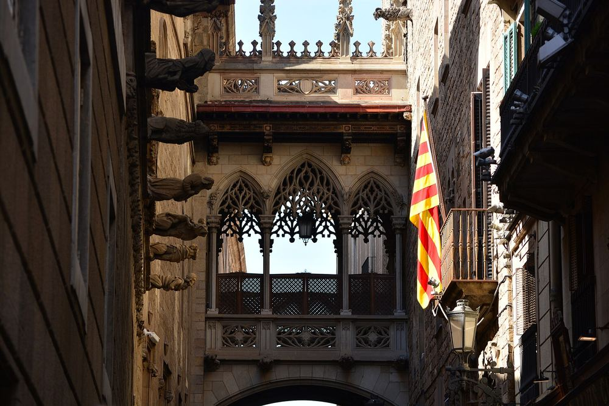
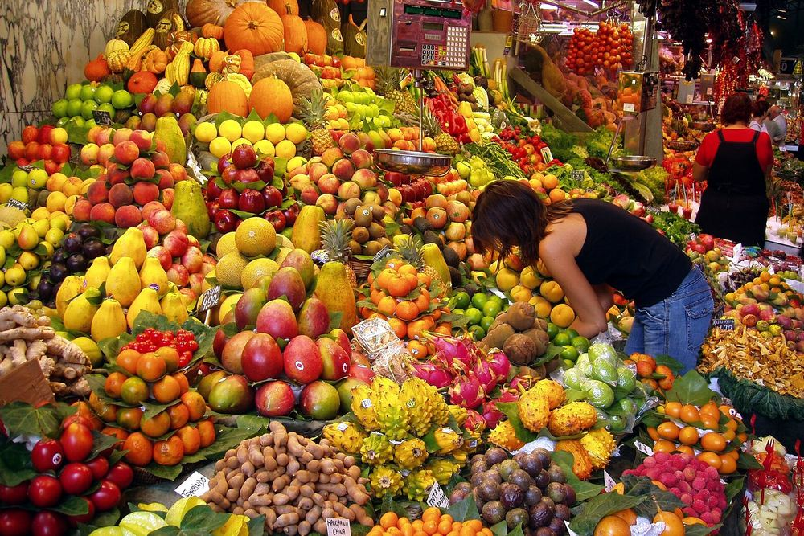
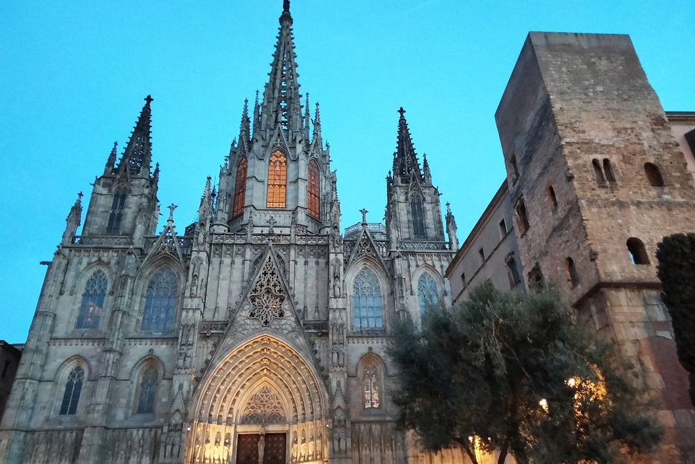
-
06:00Aterrizan en El Prat
Acá entran a Schengen: el sello del pasaporte se lo ponen en Barcelona, y vale para todo el resto del viaje salvo Escocia.
A esa hora la cola de migraciones es corta, pero la cinta de valijas tarda. Calculen una hora entre que aterrizan y que salen a la calle.
-
07:00Al centro en Aerobús
Sale de la puerta de llegadas y va sin escalas hasta Plaça de Catalunya, que es la plaza del hotel. Es la forma más simple con valijas.
CuálEl A1 es el de la T1, que es por donde llega el Level. El A2 es de la otra terminal — no sirve cualquiera
HorarioCada 5 a 10 minutos · unos 35 minutos de viaje
Se paga arriba con tarjeta. El de ida y vuelta sólo conviene si volvieran por acá, y no es el caso: la vuelta del viaje sale de noche.
-
07:45Valijas en el hotel
La habitación es recién al mediodía, pero el equipaje lo guardan desde temprano. Se dejan las valijas y se sale liviano.
-
08:15
Ya la conocen, así que esta vez es de paso: a las ocho el mercado está trabajando —descargando cajones, atendiendo a los del barrio— y esa es la única hora del día en que se parece a un mercado y no a un parque temático. Se cruza, se mira y se sigue.
DóndeLa Rambla 91 · 8 minutos a pie del hotel
Horario08:00 a 20:30 · cierra los domingos
Pinotxo ya no está: la barra más famosa del mercado se fue en 2023 al Mercat de Sant Antoni. Las que quedan adentro son El Quim —abre 07:00— y Bar Central. Si el hambre no aguanta hasta las nueve, ahí se come; si no, el desayuno es el de la parada que sigue.
-
09:00
Granja y chocolatería de 1947, en Petritxol, que es la calle del chocolate del Gòtic: una cuadra angosta con dos o tres casas viejas dedicadas a lo mismo. Lo de acá no son los churros —eso es más de Madrid— sino el suizo, chocolate espeso con un copete de crema, mojando melindros: unos bizcochos blandos y alargados, bastante más livianos que un churro.
DóndeCarrer de Petritxol 11 · a 10 minutos de la Boquería, cruzando la Rambla
HorarioLunes a sábado 09:00 a 13:00 y 16:00 a 21:00 · no toma reservas
Si está llena, Granja Dulcinea es la otra clásica y está en la misma cuadra, en Petritxol 2. Abren a las nueve en punto, así que llegar temprano es llegar sin cola.
-
09:45
Petritxol sale a la Plaça del Pi, y de ahí el casco antiguo es todo callecita angosta: la Catedral, la Plaça Reial con sus palmeras, los patios. Es caminar y perderse, que a esa hora y con el cuerpo cambiado es exactamente lo que hay que hacer.
Nada de museos ni de colas. El día es para estirar las piernas después de trece horas de avión.
-
12:00Check-in y siesta corta
Recién ahora entran a la habitación. Una ducha y un rato de cama.
Que la siesta sea corta y temprana. El jet lag hacia el este es el que más castiga, y dormir tres horas a la tarde arruina la noche.
-
14:15
Barra larga, cocina a la vista y la tapa clásica hecha en serio con producto de mercado. A las dos de la tarde, recién duchados, están bastante más enteros que a las nueve de la noche.
DóndeCarrer de la Unió 17 · Raval, a una cuadra de la Rambla
Con la hora no se jueguen. El restaurante avisa que más de 15 minutos de retraso sin aviso anula la reserva. Entre el check-in de las 12 y la siesta, 14:15 se pasa solo: pongan alarma, y si se quedaron dormidos, un mensaje antes de salir.
Qué comer acá
Es cocina de platitos, así que comer liviano o fuerte lo deciden ustedes: se piden dos o tres para compartir y se agrega uno más si quedan con hambre. Acá va liviano, que la comida fuerte del día es la cena.
Lo que pediríaLa tortita de camarones del Faro de Cádiz —va por unidad, una cada uno—, los tomates de temporada en ensalada con bonito y anchoas —septiembre es temporada de tomate y es lo más fresco de la carta— y el tataki de atún salvaje soasado y algas. Para acompañar, la coca de cristal con tomate, que es el pan con tomate catalán en versión finísima.
Si quedan con hambreLa croqueta de bogavante, que también va por unidad, o los boquerones al vinagre de Jerez, que son fríos y ácidos.
Lo que dejaría pasarEl jamón de bellota, porque lo comen mañana en La Pineda, que es el lugar para eso. Las ostras, que las tienen en Edimburgo y en Bruselas. Y todo lo pesado: canelón de pularda, butifarra, rabo de toro, callos, meloso de ternera, el “Arroz Cañete”, el entrecot, la presa ibérica y el cochinillo. El bocata de calamares y la bomba de la Barceloneta son clásicos de la casa, pero fritos y contundentes.
Un detalleLa carta tiene una sección de especiales que cambia. Estando en la barra, vale preguntar qué hay ese día y cambiar un plato por lo que recomienden.
-
21:00Cena · se decide allá
Sin reserva: la eligen ese día, según las ganas. Es la última cena de verdad antes de Islandia.
Si quieren una ideaCan Culleretes, Carrer d’en Quintana 5, Gòtic · 13 min a pie del hotel · cocina catalana de casa desde 1786 · viernes de 20:00 a 22:30. O 7 Portes, Passeig d’Isabel II 14 · arroces, abierto hasta medianoche
Al mediodía comen tapas de barra y el sábado a la mañana, jamón de pie: para la noche conviene algo de mesa.
Islandia
El corazón del viaje. Se quedan ocho noches en Islandia, y ese número no es casualidad: con tantas noches seguidas ver las auroras deja de ser cuestión de suerte. Más de 8 de cada 10 viajeros que se quedan una semana o más terminan viéndolas.
Barcelona → Reikiavik
Mañana
El último rato en Barcelona arranca con sabor. En La Pineda, una fiambrería de 1904 con los jamones colgando del techo, desayunan jamón ibérico de bellota (el de los cerdos criados sueltos, comiendo bellotas) con pan con tomate, de parados en el mostrador. Suben a Montjuïc en funicular y teleférico, y desde el castillo se despiden de la ciudad entera, con el puerto y el mar a sus pies.
Tarde
A la tarde, el salto al norte: vuelan a Islandia con Icelandair, salen de Barcelona a las 15:45 y llegan a Keflavík a las 18:20.
Noche
Aterrizan en medio de un campo de lava negra y, ya en Reikiavik, cenan trucha ártica servida en la misma sartén de cobre donde se cocinó. Si el cielo está limpio, la noche termina en el faro de Grótta, con los pies en una poza de agua caliente natural, mirando al norte a la espera de la primera aurora.
La mañana alcanza para dos cosas y no más: el jamón de pie en el mostrador de La Pineda y la última vista de la ciudad desde Montjuïc. Después es todo traslado — y del aeropuerto de Keflavík al centro van por su cuenta, porque el auto recién lo retiran el 21.
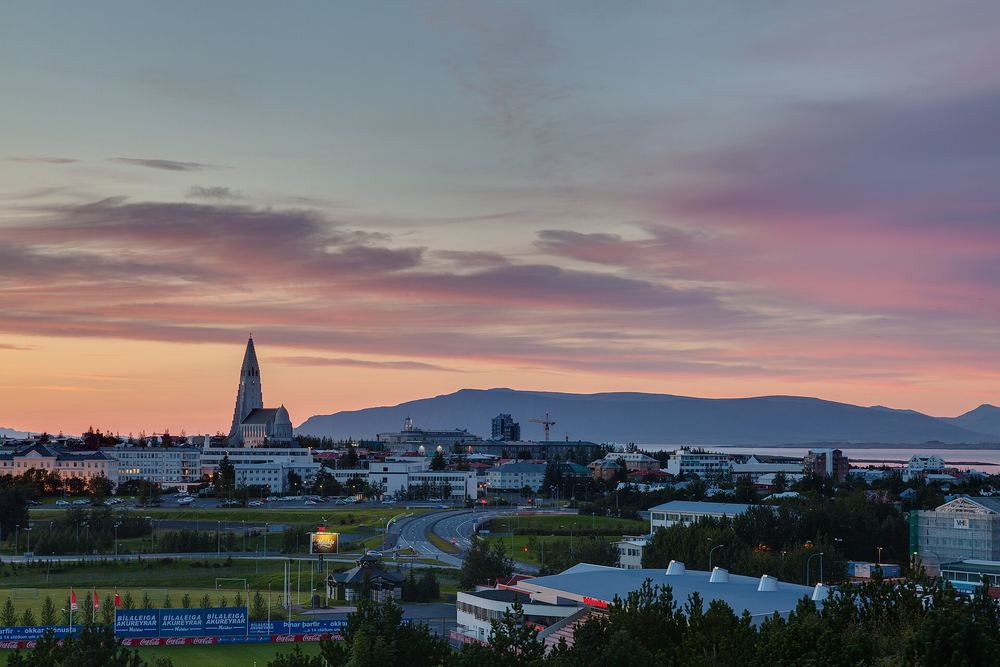
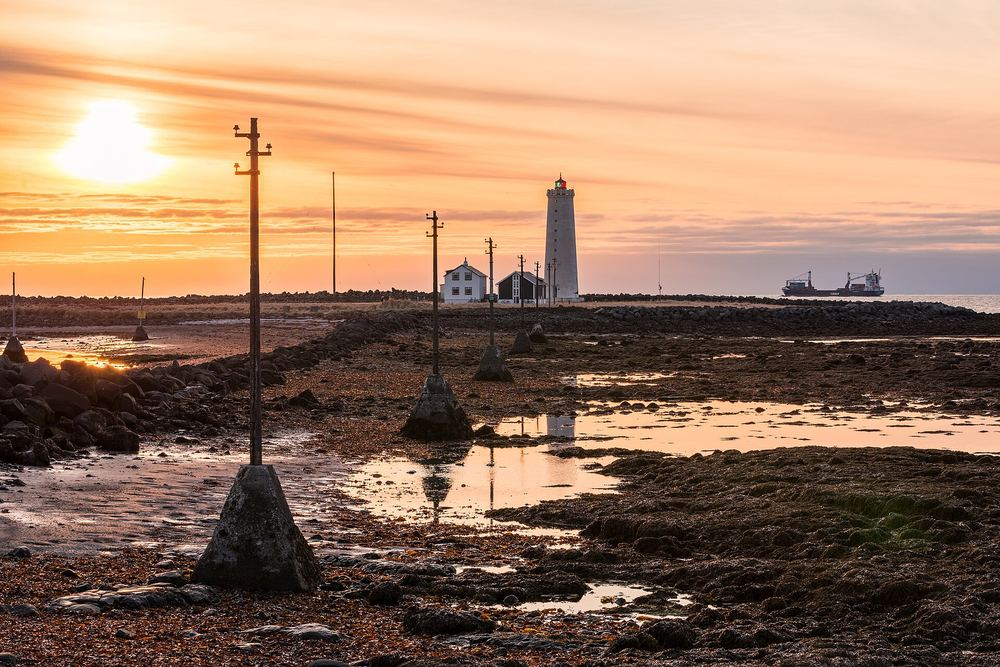
-
09:00
Xarcutería de 1904, con los jamones colgando del techo, y el único lugar de Barcelona que tiene las cuatro denominaciones de origen del ibérico. Acá es donde se prueba el bellota en serio. No hay mesas: se pide en el mostrador y se come de pie. De desayuno va con pan con tomate y café; la copa, si el cuerpo la pide.
DóndeCarrer del Pi 16 · Gòtic, 10 minutos del hotel
HorarioSábado de 09:00 a 21:00 · cierra los martes
Dejen las valijas listas antes de salir, que a la vuelta pasan a buscarlas y se van derecho al aeropuerto.
-
10:15
La última vista de Barcelona, y desde arriba: el cerro que cierra la ciudad por el sur, con el puerto entero abajo y el mar de fondo. Se sube en tres tramos encadenados y ninguno lleva esfuerzo — metro hasta Para·lel, ahí mismo el funicular, y arriba el teleférico que cruza 750 metros de aire hasta el castillo.
CómoMetro a Para·lel · funicular · teleférico. El funicular entra en el boleto de metro; el teleférico se paga aparte
HorarioEl teleférico abre 10:00 en septiembre · el viaje es de 6 minutos
Si hay viento fuerte pueden cerrar el teleférico sin aviso — es lo único que lo frena. En ese caso el funicular igual los deja arriba, en los jardines, que ya tienen vista.
-
11:45Vuelta al hotel por las valijas
De Montjuïc al centro son veinte minutos por el mismo camino.
No hay almuerzo en la ciudad: con el vuelo a las 15:45 se come en la T2 o se aguanta hasta arriba del avión — y después del jamón de la mañana tampoco hace falta mucho.
-
12:30
-
15:45Icelandair FI597 · BCN → KEF
Vuelo directo a Keflavík, unas tres horas y media. Es vuelo Schengen: España e Islandia están las dos adentro, así que al llegar no pasan por migraciones — bajan, retiran valijas y salen.
HorarioSale 15:45 · llega 18:20
-
18:20Llegada a Keflavík
El aeropuerto está a 45 km de Reikiavik, en medio de un campo de lava. No es la ciudad: para llegar al centro hay 45 minutos de ruta.
-
18:50Flybus+ al centro
El micro del aeropuerto. Se sincroniza solo con la llegada del vuelo, así que un atraso no cuesta nada. Va primero a la terminal BSÍ y ahí se hace un trasbordo a una combi chica que deja en las paradas del centro.
DóndeBaja en la parada 14 · Skúlagata · 5 min a pie del depto, cuesta abajo
HorarioSale unos 35-45 min después de que aterriza el vuelo
Es el Plus, que es el que deja en la parada del barrio — el Flybus a secas termina en la terminal, a 2 km del depto.
-
20:20
Sartenes de pescado, servidas en la misma sartén de cobre desde la cocina a la mesa. Es el plato islandés casual por excelencia, y es rápido: justo lo que hace falta el día que se llega de volar.
DóndeLækjargata 6b · 12 min a pie, cuesta abajo
HorarioSábado hasta las 22:00 · no hace falta reservar
Qué comer acá
Vienen de volar todo el día y la cocina cierra a las 22:00: es cena, pero conviene que sea sencilla.
A lo que se va acáLas sartenes de pescado, que salen de la cocina en la misma sartén de cobre en que se cocinaron, con papas doradas en manteca. La que más recomiendan es la de trucha ártica —bleikja, con costra de miel—, y después el bacalao salado y el steinbítur, el pez lobo. Es el plato por el que existe el lugar.
Ojo con repetirAcá no pidan plokkfiskur, aunque esté en la carta. Mañana a la noche, en el Íslenski Barinn, viene en olla de hierro con queso gratinado y es mejor versión. Hoy, la sartén.
Un detalleLas sartenes son grandes: una por cabeza alcanza y sobra. Y conviene reservar.
-
21:35
Crepería y heladería. En Islandia el helado se come todo el año, con frío y de noche: van a ver islandeses comiendo helado a cinco grados y es lo más normal del mundo.
DóndeSkólavörðustígur 2 · 5 min del depto, de paso a la vuelta
HorarioSábado hasta las 22:00
Entra justo si salen de Messinn a las 21:30. Y el domingo cierra a las 18:00: o es esta noche, o no es.
-
22:00
La punta de la península de Seltjarnarnes, con el faro al fondo. Mira al norte, al mar abierto, sin una sola luz: es el mejor lugar de auroras de todo el viaje al que se puede llegar sin auto. Al lado del estacionamiento está Kvika, una poza de cemento con agua caliente natural para meter los pies.
DóndeSeltjarnarnes · en taxi, 12 min desde el centro
HorarioAl aire libre, siempre · Kvika es gratis
El islote no se cruza esta noche. Se llega por una lengua de arena que se tapa con la marea, y a las 22:00 el agua está subiendo hacia la alta de las 00:24. Igual no hace falta: las auroras se miran desde la orilla y se ven igual.
Reikiavik a pie
Mañana
Reikiavik se descubre a pie, y la mañana huele a canela: los kanilsnúðar (rollos de canela) salen calientes de una panadería pintada de arriba abajo con un mural. Bajan a la costanera, donde una escultura de acero con forma de barco vikingo apunta al mar, y entran a la Harpa, el teatro cuya fachada son cientos de vidrios que cambian de color con la luz.
En el mercado de pulgas, que sólo abre los fines de semana, se animan —o no— con el hákarl (tiburón fermentado, el bocado más temido de la isla), y almuerzan en el puesto de panchos más famoso del país, abierto desde 1937: pylsur (panchos de cordero), pedidos «con todo».
Tarde
A la tarde suben a la torre de la Hallgrímskirkja, la iglesia que imita las columnas de basalto, y ven desde arriba la ciudad de techos de colores. En Perlan, bajo una cúpula, un planetario les enseña cómo bailan las auroras.
Noche
A la noche, plokkfiskur (guiso de pescado con papa, gratinado con queso) en olla de hierro, y otra vez al faro, a mirar el cielo.
Único día completo en la ciudad y todavía sin auto: todo entra caminando, salvo Perlan. El recorrido va en una sola dirección — del depto a la costanera, la costanera de este a oeste, después al sur hasta el lago, y de ahí cuesta arriba a la iglesia.
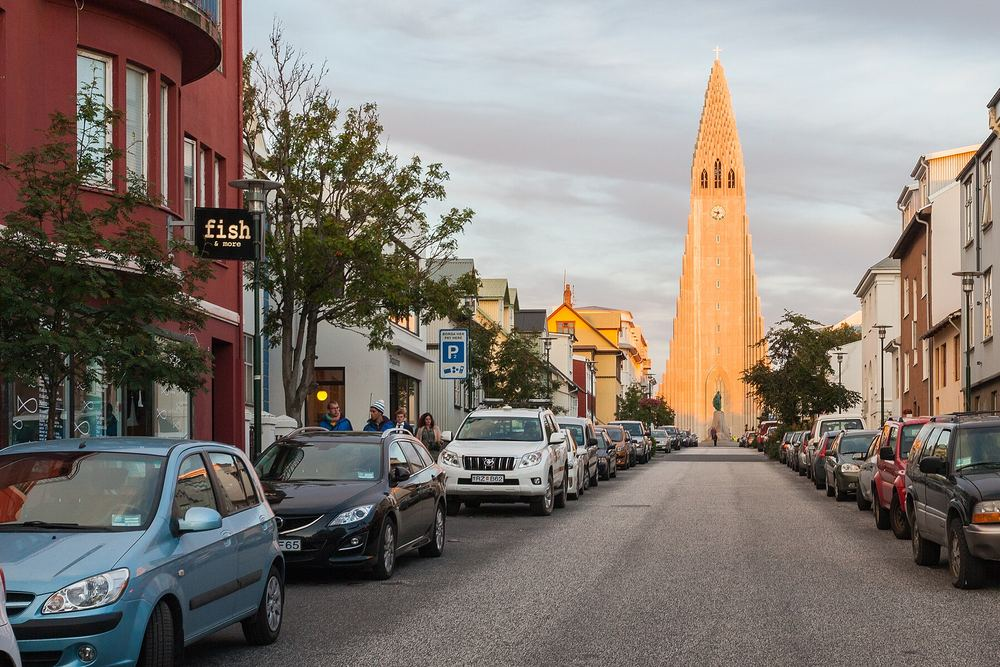
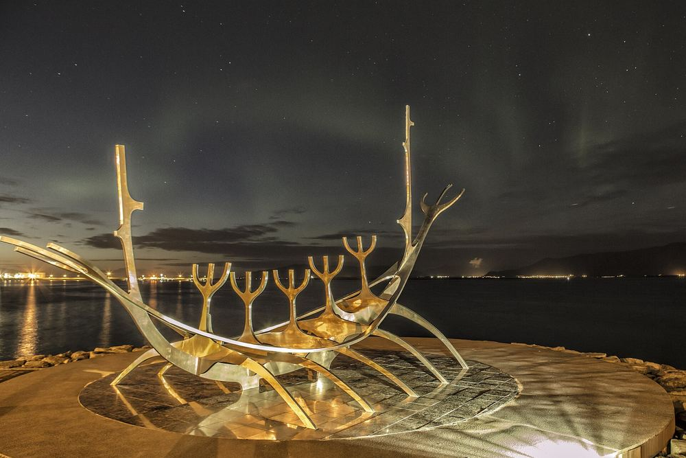
-
09:30
La calle peatonal que sube desde el centro hasta la iglesia grande. Tiene el arcoíris pintado en el asfalto y es la foto más repetida de Reikiavik. Está llena de tiendas de diseño y de lana.
DóndeA dos cuadras del depto
La foto sale mucho mejor temprano: con la iglesia al fondo y todavía sin gente.
-
09:30
Panadería. La más famosa de la ciudad por los rollos de canela, que salen calientes cada tanto. El edificio está pintado de arriba abajo con un mural.
DóndeFrakkastígur 16 · 5 min a pie
HorarioAbre 06:00, todos los días
Es para llevar: casi no tiene mesas. Si quieren sentarse, la otra es Sandholt.
-
09:30
-
10:15
Una escultura de acero pulido sobre la costanera, mirando al mar y a las montañas. Todo el mundo dice que es un barco vikingo, pero el autor decía que no: que es un sueño de viajar hacia lo desconocido.
DóndeSæbraut, sobre la costa · 10 min a pie del depto
HorarioAl aire libre, siempre · gratis
-
10:30
La sala de conciertos, sobre el agua. La fachada está hecha de cientos de celdas de vidrio de colores que cambian con la luz del día. Se entra gratis a caminar por adentro aunque no haya función: la gente sube por las escaleras sólo para ver el vidrio desde el otro lado.
DóndeAusturbakki 2 · 5 min caminando desde el Sun Voyager
HorarioDomingo 10:00–18:00 · entrada libre a las zonas públicas
-
11:15
El mercado de pulgas, adentro del edificio de la vieja aduana. Antigüedades, ropa usada, discos, artesanías, y un puesto de comida islandesa de la que asusta: pescado seco y hákarl, el tiburón fermentado.
DóndeTryggvagata 19 · 6 min desde la Harpa
HorarioSólo sábados y domingos, 11:00–17:00
Es el único mercado de pulgas de Islandia y abre nada más que el fin de semana. Este día es domingo: les toca.
-
12:15
El puesto de panchos más famoso de Islandia, funcionando desde 1937. El nombre quiere decir «los mejores del pueblo». Son de cordero. Es un kiosquito y se come parado.
DóndeTryggvagata 1 · al lado del mercado
Se pide «eina með öllu» — una con todo: cebolla frita, cebolla cruda, mostaza dulce, ketchup de manzana y remoulade.
-
12:45
La plaza principal de la ciudad. De un lado está el Parlamento, que es un edificio de piedra más bien chico, y al lado la Dómkirkjan: la catedral de verdad de Islandia, blanca, sencilla y sorprendentemente pequeña. La famosa es la otra, la de la colina.
Dónde5 min caminando desde Bæjarins Beztu
HorarioLa plaza siempre · la catedral, entrada libre
-
13:00
Tjörnin es el lago en el medio de la ciudad, lleno de patos, cisnes y gansos; en invierno le calientan un pedazo para que no se congele del todo. Sobre una punta está el Ráðhús, la municipalidad, un edificio moderno con una pared metida adentro del agua. Adentro hay un mapa gigante de Islandia en relieve.
DóndeTjarnargata 11 · 2 min desde la plaza
HorarioDomingo 12:00–18:00 · entrada libre
Los domingos abre recién a las 12. El mapa 3D vale la parada: es la mejor forma de entender por dónde van a manejar los ocho días siguientes.
-
13:45
La iglesia de hormigón que se ve desde toda la ciudad y desde 20 km afuera. La fachada imita las columnas de basalto que dejan los volcanes al enfriarse. Adentro es de una simpleza total, con un órgano enorme. La torre es el mirador y se sube en ascensor.
DóndeHallgrímstorg 1, arriba de todo de Skólavörðustígur · 12 min desde el lago
HorarioDomingo: cerrada 10:30–12:30 por la misa de 11 · después, iglesia hasta 17:00 y torre hasta 16:45
La torre cierra 15 minutos antes que la iglesia, y en septiembre ya rige el horario de invierno. No dejarla para el final de la tarde.
-
15:00
Un domo de vidrio construido arriba de los tanques de agua caliente de la ciudad, sobre una colina con bosque. Hoy es un museo de naturaleza: tiene una cueva de hielo de verdad por adentro, una sala de volcanes y un mirador de 360°. Y Áróra, el planetario dedicado entero a las auroras: se sientan, se apaga la luz y la aurora se proyecta en la cúpula.
DóndeÖskjuhlíð · 2,5 km cuesta arriba · en taxi, o el bus 18
HorarioTodos los días 9:00–21:00 · la función de Áróra dura 25 minutos
Cae justo antes de las mejores noches del viaje. Es la mejor preparación posible para saber qué mirar en el cielo las noches que siguen.
-
18:00Vuelta al centro
De Perlan al centro, en taxi o el bus 18.
-
20:00
Cocina islandesa clásica, de la de todos los días: sopa de cordero y plokkfiskur, que es pescado desmenuzado con papa y cebolla, el plato de casa de toda la vida. Después de un día entero caminando, es lo que pide el cuerpo.
DóndeIngólfsstræti 1a · 8 min del depto
HorarioDomingo 11:00–01:00 · la cocina, hasta 22:30
Qué comer acá
Cocina islandesa de todos los días, después de un día entero caminando la ciudad. Y la mejor carta de cerveza islandesa del país: hasta sesenta etiquetas.
El plokkfiskur, acá síPescado desmenuzado con papa y cebolla — el plato de casa islandés. Acá llega en olla de hierro caliente con queso gratinado arriba, que es la mejor versión de la ciudad. Anoche lo saltearon en Messinn a propósito: ésta es la buena.
Lo otro clásicoLa sopa de cordero: kjötsúpa, cordero, verduras y caldo, cocinada lento. Es el otro plato de casa de Islandia.
Lo curiosoHamburguesa de reno y pancho de langosta con queso y mermelada.
Lo raro de verdadCada tanto tienen ballena, cabeza de cordero y frailecillo. Están en la carta y son reales; no hace falta pedirlos, pero conviene saber que van a estar ahí.
-
21:30
-
·
Grandi es el barrio del puerto viejo: era zona de pescaderías y galpones y hoy tiene museos, cervecerías y restaurantes. Ahí están el FlyOver Iceland, una butaca que se mueve colgada frente a una pantalla curva gigante, con viento y olor, que es «volar» sobre Islandia (35 minutos), y el Lava Show, donde derriten roca de verdad a 1.100 grados y la hacen correr por una canaleta adentro de la sala (50 a 75 minutos).
DóndeFiskislóð, en Grandi · 20 min a pie del centro
Los dos son bajo techo. Son el plan si el día se pone imposible.
Termas de Hvammsvík → Snæfellsnes
Mañana
Hoy les dan las llaves del auto y la isla se abre. La primera parada es Hvammsvík: pozas de agua termal al borde de un fiordo, donde se flota en agua caliente con el mar helado a un paso.
Tarde
Siguen hacia la península de Snæfellsnes y el paisaje se vuelve cada vez más raro: un muro de columnas de basalto que parece tallado a mano, una playa de rocas donde las focas toman sol a pocos metros, y Búðakirkja, una iglesita de madera pintada de negro, sola en medio de un campo de lava.
Noche
Al atardecer llegan a Grundarfjörður, un pueblo de pescadores con la montaña Kirkjufell asomada en la ventana, y cenan mirándola.
Acá arranca la parte en auto. Retiran a las 08:30 y salen a la ruta cerca de las 09:00, rumbo a la península de Snæfellsnes.
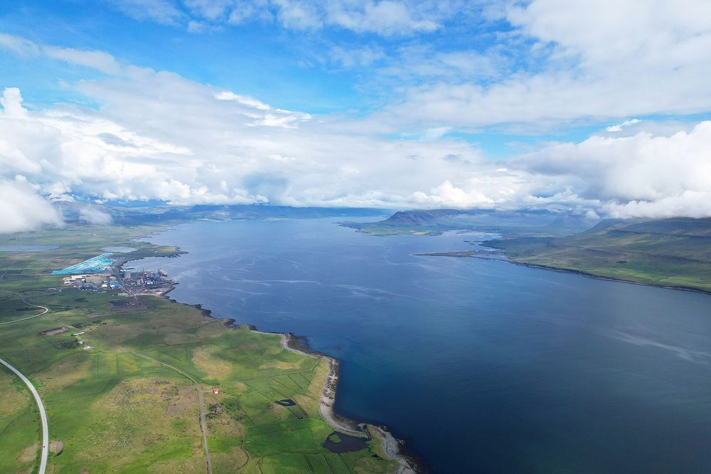
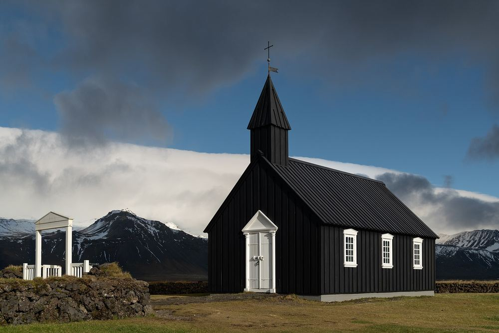
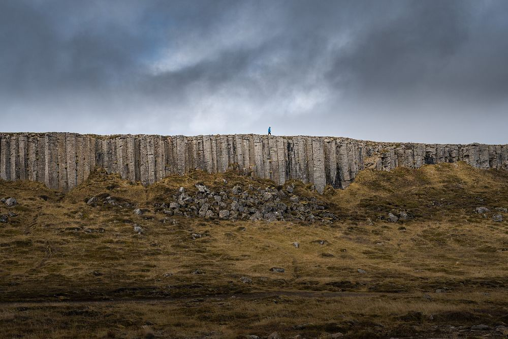
-
08:30
Una camioneta 4x4 automática. Entre los papeles y acomodar las valijas se van casi 30 minutos: salen a la ruta cerca de las 09:00.
DóndeSkógarhlíð 16 · a diez minutos del depto
HorarioRetiro a las 08:30
Sacarle fotos al auto por los cuatro costados antes de arrancar. En Islandia el viento y la piedra suelta son la causa número uno de daños, y conviene tener cómo probar qué golpe ya estaba.
-
10:30
Pozas de agua caliente natural sobre la orilla del fiordo de Hvalfjörður: son varias, a distintas temperaturas, algunas metidas en la costa misma, donde el mar entra con la marea. Mucho más chico y más tranquilo que las termas grandes.
DóndeFiordo de Hvalfjörður · 53 min del retiro del auto, 54 km
HorarioTurno 10:30 · Clásico, los dos · hay que llegar dentro de los 15 minutos del turno · adentro no hay límite de tiempo · cierra 20:30
Las toallas ya están: las alquilaron con la reserva. El calzado para el agua no: llévenlo o se alquila ahí. No es un lujo — la web avisa que las piedras de las pozas son filosas y resbalan.
Saliendo del retiro a las 09:00 llegan 09:53, media hora antes de que abra. No hay apuro con el auto.
-
13:30
La panadería y café del pueblo, sobre el fiordo, en la mitad exacta del camino. Sándwiches, tortas y pan recién hecho. Es la parada de comida clásica de esta ruta: para acá casi todo el que va al oeste.
DóndeBorgarnes, sobre la ruta 1 · 50 min de Reikiavik
HorarioLunes a jueves 7:30–16:30 · llegan 13:30, abierto
La otra opción del pueblo es el restaurante del Museo del Asentamiento, más de sentarse a la mesa. No encontré sus horarios publicados.
Qué comer acá
Es panadería y café, así que acá el almuerzo liviano sale solo — y viene bien, porque después quedan tres paradas y dos horas de ruta hasta Grundarfjörður.
Lo livianoUn sándwich —los hacen con producto de la zona, jamón y huevo o versiones vegetarianas— o un club sandwich. Si prefieren sopa, pidan la de hongos o la de coliflor.
Ojo con repetirEviten acá la sopa de mariscos. Mañana al mediodía, en Fjöruhúsið, la sopa de pescado es el plato de la casa y es por lo que ese lugar existe. Dos sopas de pescado en dos mediodías seguidos sería una lástima.
Lo dulce, aunque sea para llevarEl snúður, que es el rollo de canela islandés cubierto de chocolate, y los ástarpungar — literalmente «bolsas de amor», bolitas de masa frita con pasas.
-
14:50
Un paredón de columnas de piedra de varios cientos de metros de largo, todas parejas, del mismo alto y de seis lados. Es lava que se enfrió despacio y se partió sola en esa forma. Está al costado del camino, al entrar a la península.
DóndeEntrada a Snæfellsnes · unos 300 m del camino
HorarioAl aire libre, siempre · gratis
-
15:35
Una playa donde hay focas: se suben a las rocas a tomar sol y se quedan ahí. Es de los pocos lugares de Islandia donde se ven casi seguro y desde cerca.
DóndeCosta sur de Snæfellsnes
HorarioAl aire libre, siempre · gratis
Se ven mejor con la marea baja, que es cuando las rocas quedan afuera. Y de lejos: acercarse las espanta y está prohibido.
-
16:25
Una iglesita de madera pintada de negro, sola en el medio de un campo de lava, con el mar de un lado y la montaña del otro. No hay pueblo alrededor: sólo ella. Es una de las postales más conocidas del país.
DóndeBúðir, sobre la costa sur de la península
HorarioPor afuera, siempre · adentro no se entra
-
17:40Grundarfjörður
El pueblo de pescadores donde duermen las dos noches, al pie del Kirkjufell. Llegan con luz de sobra: atardece 19:38.
DóndeCosta norte de Snæfellsnes
-
20:00
El restaurante del pueblo, sobre la calle principal. Hamburguesas, pizza y pescado, y vista al Kirkjufell desde la mesa. En Grundarfjörður hay dos lugares: este es el de siempre.
DóndeGrundargata 59, Grundarfjörður
HorarioLunes a jueves 11:30–23:00
Bjargarsteinn, que era el mejor de la península, cerró en 2025 y hoy es alojamiento. La página de turismo del pueblo lo sigue listando: si lo ven abierto, es la mejor comida de la zona.
Qué comer acá
No tienen carta publicada: esto sale de reseñas, no de su menú. Tómenlo como la forma del lugar, no como la lista exacta.
Qué hayHamburguesas, pizzas y pescado rebozado. Los platos llevan nombres de los cerros de acá: la hamburguesa Kirkjufellsfoss y las pizzas Kirkjufell, Stöð y Helgrindur. Al mediodía hay bufet con sopa y café, pero ustedes llegan de noche.
Qué recomiendanDos opciones, y las dos van bien. El fish and chips, que es lo que más nombran — hay quien dice que es el mejor de todo su viaje. O el pescado del día, que es lo que conviene si quieren guardar el fish and chips para Edimburgo: allá lo cenan el domingo 27, en Bertie's. Varias reseñas se quejan de que la hamburguesa y el pescado a veces salen secos: si el día viene raro, pescado antes que hamburguesa.
Un detallePidan mesa en la ventana del frente: desde ahí se ve el Kirkjufell.
La punta de la península y Kirkjufell
Mañana
Un día para recorrer el extremo de la península, donde la tierra se termina contra el Atlántico. Caminan por el borde de los acantilados entre Arnarstapi y Hellnar, con arcos de roca y aves marinas volando abajo, y el sendero los deja en la puerta de Fjöruhúsið, un café de madera a la orilla del mar famoso por su fiskisúpa (sopa cremosa de pescado).
Tarde
Después aparecen los Lóndrangar, dos torres de lava que salen del mar, y la playa de Djúpalónssandur, de piedritas negras y lisas, donde todavía están los hierros oxidados de un barco pesquero que naufragó en 1948. A la tarde, el puerto de Stykkishólmur, y al final la Kirkjufell con su cascada: la montaña más fotografiada de Islandia.
Noche
Si hay auroras, vuelven de noche para verla con el cielo verde encima.
Base fija en Grundarfjörður y un circuito que sale y vuelve al mismo lugar. Unas 8 horas en total saliendo a las 09:00, con el grueso del manejo a la mañana.
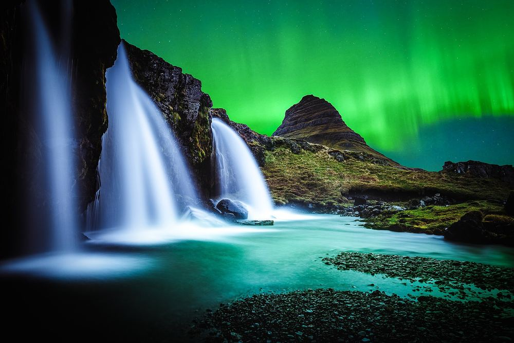
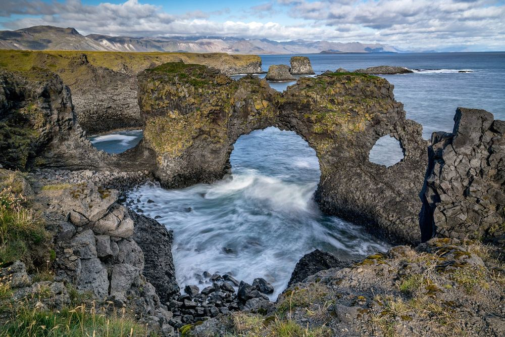
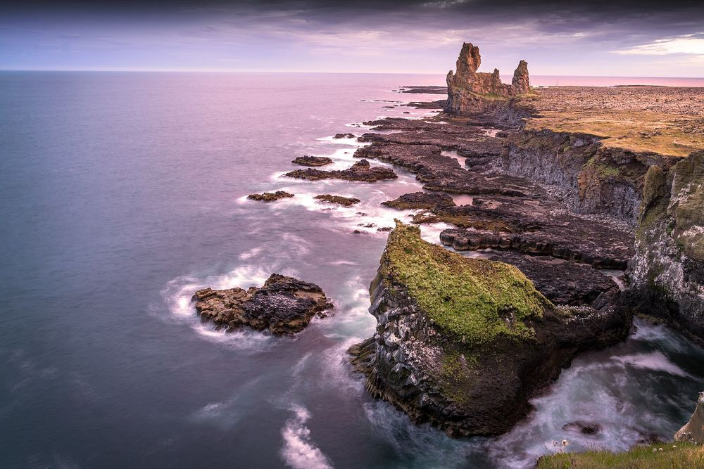
-
09:00Salida de Grundarfjörður
El día es un circuito que sale y vuelve al mismo pueblo, así que no hay que cargar las valijas: salen livianos y duermen otra vez ahí.
-
10:00
Un sendero de 2,5 km por el borde del acantilado entre dos caseríos de pescadores. Va pasando por arcos de piedra que el mar fue cavando y por acantilados llenos de pájaros. Es plano y fácil: la mejor caminata corta de todo el tramo.
DóndeCosta sur de la península · 1 h de Grundarfjörður
HorarioAl aire libre, siempre · gratis
Se puede hacer de ida y vuelta (5 km) o dejar el auto en una punta y volver caminando. A la mañana, con energía.
-
11:45
Un café diminuto de madera, pegado a la orilla del mar, con dos docenas de sillas adentro y una terraza. Es famoso por la sopa de pescado y la de langosta, con pan casero. Está justo donde termina la caminata: se llega a pie desde Arnarstapi.
DóndeHellnar, al final del sendero costero
HorarioDe temporada · abre hasta fines de octubre
No pude confirmar el horario exacto de septiembre: en temporada baja acortan. Si está cerrado, se come más tarde en Ólafsvík o en Stykkishólmur.
Qué comer acá
Llegan caminando desde Arnarstapi, por el borde del acantilado, y el café está justo donde termina el sendero. Es diminuto — dos docenas de sillas adentro y una terraza.
A esto vinieronLa sopa de pescado con pan casero. Es la razón por la que el lugar es famoso, es cremosa y llena sin pesar, y es exactamente lo que pide el cuerpo después de dos horas y media de caminata. También hacen sopa de langosta. Ayer en Geirabakarí convenía no pedir sopa de mar justamente para llegar limpios a ésta.
Si quieren algo másQuiche de verdura o de pollo, y pasta.
Lo dulceEs lo otro por lo que se lo conoce: torta de skyr, de zanahoria, de chocolate, waffles de chocolate y tarta de manzana.
-
12:45
Dos agujas de basalto plantadas sobre el mar, la más alta de unos setenta metros. Son lo que quedó del tapón de un volcán viejo después de que el mar se comiera todo el resto del cono. Hay un mirador al costado del camino.
DóndeSobre la ruta 574, entre Arnarstapi y Djúpalónssandur
HorarioAl aire libre, siempre · gratis
Es bajarse, mirar y seguir: quince minutos. Si quieren estirar las piernas hay un sendero corto que acerca un poco más.
-
13:15
Una playa de piedritas negras redondas, en la punta misma de la península. Desparramados sobre la arena están los restos oxidados de un pesquero inglés que naufragó ahí en 1948, y que se dejaron donde cayeron, como memorial. También están las cuatro piedras con las que los pescadores medían su fuerza para ser aceptados en un barco.
DóndePunta oeste de Snæfellsnes
HorarioAl aire libre, siempre · gratis
El mar acá es traicionero, igual que en Reynisfjara. No bajar a la orilla.
-
15:30
Puerto de casitas de madera de colores sobre una bahía llena de islotes. Tiene una iglesia moderna muy rara, toda blanca, que parece una nave. Buen lugar para comer pescado si sobra tarde.
DóndeCosta norte de la península · 45 min de Grundarfjörður
Es lo primero que se recorta si el día viene lento. Todo lo demás del día es único; esto es un pueblo lindo.
-
17:30
La montaña con forma de punta de flecha, sola sobre la costa, con una cascada chica justo adelante que la enmarca. Es la montaña más fotografiada de Islandia y sale en Game of Thrones. Está a cinco minutos del alojamiento.
DóndeA la salida de Grundarfjörður · 5 min
HorarioAl aire libre, siempre · gratis
-
19:30
El otro de los dos de Grundarfjörður: pescado, cordero y pollo. Así no repiten el de anoche.
DóndeNesvegur 5, Grundarfjörður
⚠ Cena temprano. Este lugar hoy figura como Harbour Café, y según su propia página la cena se sirve sólo de 18:00 a 20:00. Para cenar a las 20:00 o más tarde, lo único abierto del pueblo es Kaffi 59, hasta las 23:00.
Qué comer acá
No tienen carta publicada: esto sale de la página de turismo del pueblo, no de su menú.
Qué pedirHay hamburguesas, pizza y pescado. Vayan por la pizza o el pescado. Mañana a la noche, en Smiðjan Brugghús, la hamburguesa de queso azul y la de cordero son de lo mejor que tienen — no conviene quemar la hamburguesa hoy.
Un detalleHacen buen helado, y también mira al Kirkjufell, igual que el Kaffi 59 de anoche.
-
·
De día se va para ubicarse y entender dónde pararse. De noche es la foto: con auroras arriba de la montaña es la imagen más repetida de Islandia, y la tienen a cinco minutos de la cama.
Vale la pena mirar de día dónde está el estacionamiento y por dónde se baja a la cascada. De noche, sin haberlo visto antes, es fácil perderse.
Viaje a Vík por la costa sur · EQUINOCCIO
Tarde
Hoy es la costa sur, la Islandia de las postales, y la ruta está sembrada de cascadas. Seljalandsfoss, que se camina por detrás, entre el rugido y el rocío; Gljúfrabúi, escondida adentro de una grieta en la roca; la enorme Skógafoss, que con sol arma arcoíris, y Kvernufoss, en un cañón al que llega poca gente.
Noche
Llegan temprano a Vík, el pueblo de la playa negra, y cenan en una cervecería que hace su propia cerveza: costillas cocidas en milk stout (una cerveza negra y cremosa). Es la noche del equinoccio, cuando el cielo del norte suele estar más activo, así que esta noche nadie se duerme temprano.
352 km y 5 h 15 de manejo, con cuatro cascadas sobre la ruta y ningún desvío. Saliendo a las 09:00 y almorzando en Selfoss, llegan a Vík cerca de las 17:45, con la tarde por delante.
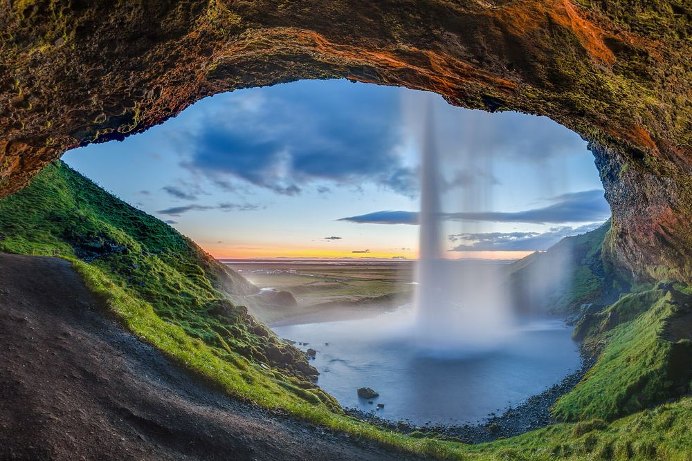
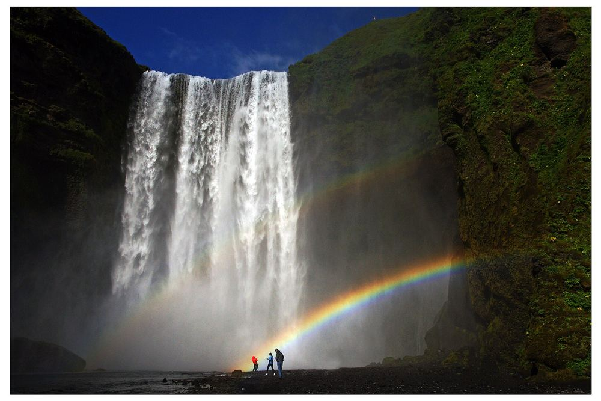
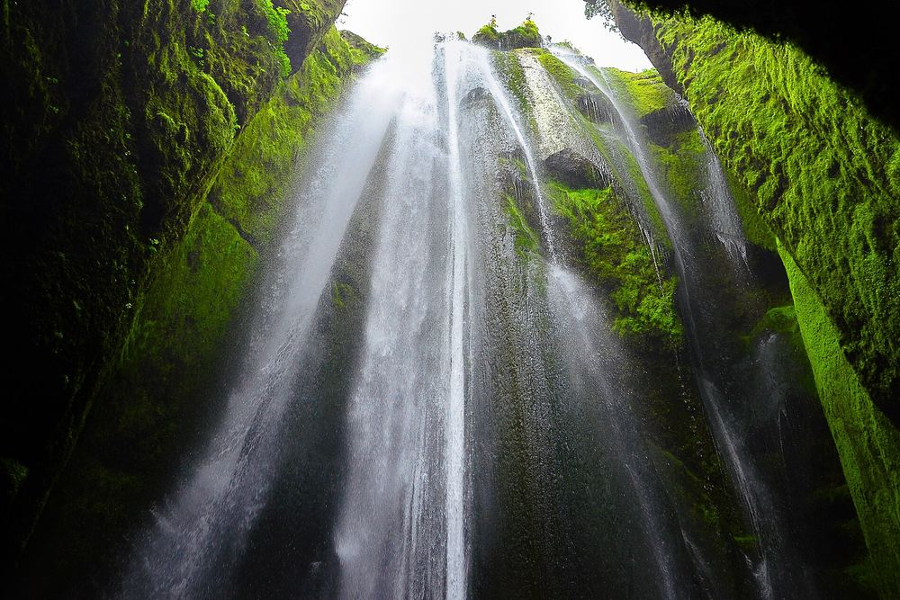
-
09:00Salida
352 km y 5 h 15 de manejo, sin ningún desvío: las cuatro cascadas y el almuerzo están todos sobre la ruta 1. Hasta Selfoss son 3 h 12, y de ahí a Seljalandsfoss, 1 h 04.
-
12:15
Un patio de comidas con ocho puestos bajo el mismo techo, en una réplica de la vieja lechería del pueblo — en islandés, Mjólkurbúið. Cae justo a la mitad del camino, y cada uno puede pedir en un puesto distinto y sentarse juntos.
DóndeEyravegur 1, Selfoss · sobre la ruta 1: desviarse cuesta un minuto
HorarioTodos los días 11:30–21:00 · sin reserva
Con cuarenta y cinco minutos alcanza. Es lo que corre la tarde: sin esta parada llegaban a Vík a las 17:00.
Qué comer acá
Llegan con tres horas de auto encima y todavía quedan cuatro cascadas y dos horas de ruta. Almuerzo liviano: la comida fuerte es esta noche, en Smiðjan.
Lo liviano, y lo que no se repiteLos tacos de Takkó: de langostino, pollo, cerdo o brócoli. No hay tacos en ningún otro día del viaje.
La otraLas empanaditas al vapor de Menam Dim Sum. Ojo que mañana a la noche, en Suður-Vík, el curry también es asiático.
Ojo con repetirSalteen Röstí, que es de hamburguesas: esta noche en Smiðjan la hamburguesa es de lo mejor que tienen. Flatey es pizza, que anoche pudo tocar en 65 Ubuntu y el viernes vuelve en Halldórskaffi. Y Menam, el tailandés, es lo de mañana. En Samúelsson Matbar hay cocina islandesa, pero es guiso y sopas, y vienen de dos mediodías de sopa.
-
14:00
Una cascada alta y fina que cae desde un acantilado, con un sendero que pasa por detrás de la cortina de agua. Se da la vuelta completa y se la ve desde adentro. Es la única grande de Islandia donde se puede hacer eso.
DóndeSobre la ruta 1 · 2 h de Reikiavik
HorarioAl aire libre, siempre · estacionamiento pago
Impermeable, no paraguas. Atrás de la cascada hay viento y el agua viene de todos lados: un paraguas se da vuelta y no sirve. Y el piso es piedra mojada.
-
14:45
La cascada escondida. Está a 500 metros de la anterior, metida adentro de una grieta en la roca: desde afuera casi no se ve. Se entra pisando el arroyo, por una hendidura, y adentro se abre una especie de cueva sin techo con la cascada cayendo en el medio. Casi siempre está vacía.
Dónde500 m al norte de Seljalandsfoss, caminando
HorarioAl aire libre, siempre · gratis
Se entra con los pies en el agua. Botas impermeables, o sandalias y toalla.
-
15:45
Sesenta metros de caída frontal, ancha y pareja, que se pueden mirar de frente desde abajo — se puede caminar hasta casi tocarla. Hay una escalera al costado que sube al mirador de arriba.
DóndeSobre la ruta 1 · 30 km de Seljalandsfoss
HorarioAl aire libre, siempre · gratis
Con sol de tarde suele haber arcoíris en la base. Y la escalera es larga: si van a subir, calcúlenle 20 minutos más.
-
16:30
La hermana escondida de Skógafoss. Está a un kilómetro, detrás del museo de Skógar, metida en una hendidura verde que no se ve desde la ruta. También se camina por detrás de la cortina de agua, igual que en Seljalandsfoss — pero acá casi nunca hay nadie.
DóndeSkógar · 15 min a pie desde el estacionamiento del museo
HorarioAl aire libre, siempre · gratis
El sendero cruza un portón de campo y va por el borde de un arroyo: se embarra. Botas, y cerrar el portón al pasar.
-
17:45Llegada a Vík
El pueblo más al sur de Islandia, entre la playa negra y un cerro verde. Es la base de las próximas tres noches.
-
20:00
Cervecería propia y restaurante en el mismo galpón, en el centro de Vík. Hacen su cerveza ahí y cocinan con ella: las costillas van cocidas en su milk stout. Hamburguesas gruesas y alitas. Es el primer punto cervecero del viaje, y cae justo donde duermen tres noches.
DóndeEn el centro de Vík · a pasos del alojamiento
HorarioTodos los días 12:00–22:00, todo el año
Qué comer acá
Es cervecería propia: hacen la cerveza en el mismo galpón y tienen diez canillas. Es el primer punto cervecero del viaje.
Lo que no hay en ningún otro ladoLas costillas caseras cocidas en su milk stout «Stuck at Home». Es el plato por el que existe el lugar y no se repite en todo el viaje.
Y acá sí, la hamburguesaLa de queso azul y la de cordero son las dos que más nombran. Anoche en 65 Ubuntu convenía saltearla para poder pedirla hoy. También hay alitas picantes y tablas de BBQ con costillas y pulled pork.
Lo curiosoLas corn ribs: choclo cortado a lo largo y grillado, que se come como si fuera una costilla.
Ojo con esta nocheEs la noche con más probabilidad de auroras de todo el viaje, y el día se aligeró a propósito para llegar despiertos. Una tabla de BBQ y tres cervezas a las ocho de la noche es la forma más fácil de perdérsela.
-
·Noche clave
Es la noche con más probabilidad de tormenta geomagnética de todo el viaje, y encima cae en el equinoccio, que estadísticamente es cuando más auroras hay. Por eso el día se aligeró a propósito: Sólheimasandur y Dyrhólaey se pasaron al jueves para llegar temprano y descansados.
La luna está al 90% y lava el cielo. Aun así, si la actividad es fuerte se ven igual: conviene alejarse de las luces del pueblo.
Vík · el día completo sin manejar
Mañana
Un día entero en Vík, sin apuro y casi sin auto. A la mañana caminan cuatro kilómetros por un desierto de arena negra hasta los restos de un avión de la Marina de Estados Unidos que quedó ahí en 1973: un esqueleto de metal en medio de la nada.
Tarde
Después se asoman a Gígjagjá, una cueva cuya entrada tiene el perfil exacto del maestro Yoda, y al arco de roca de Dyrhólaey, por donde el mar entra bajo el acantilado. Terminan en Reynisfjara, la playa negra más famosa del país, con sus columnas de basalto y las agujas de piedra saliendo del agua; esta vez se mira desde arriba, porque ahí las olas no perdonan.
Noche
A la noche, curry tailandés en una casa de 1902 en lo alto del pueblo.
Base fija y todo a menos de 30 minutos de la puerta: apenas 1 h 30 de manejo en todo el día, repartida en tres tramos cortos.
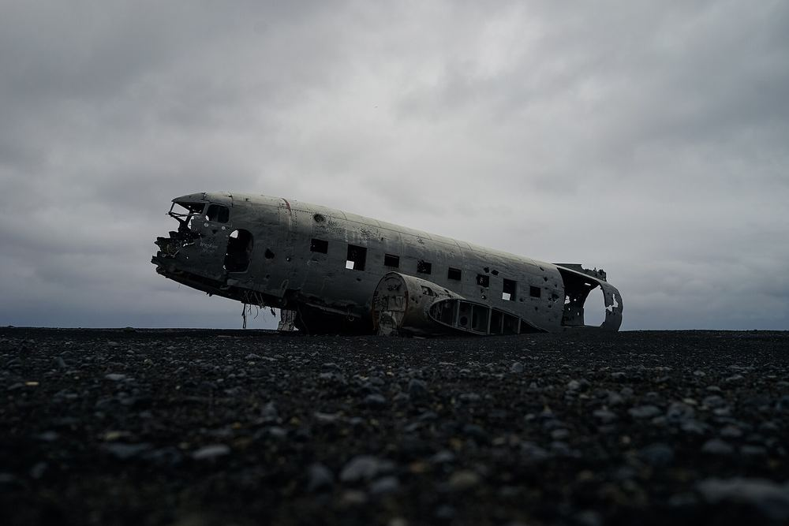
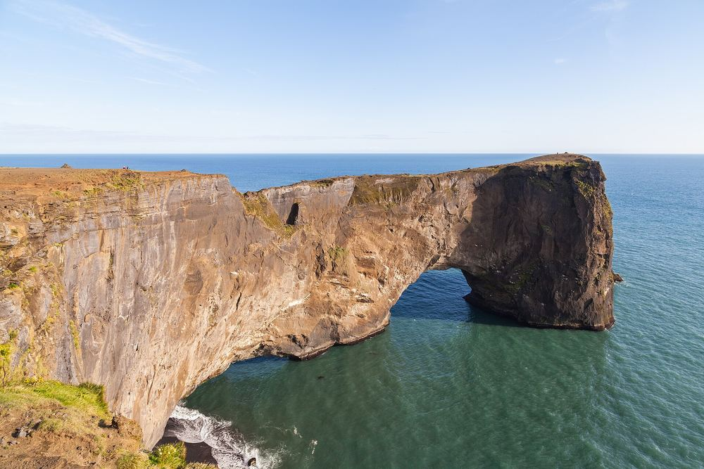
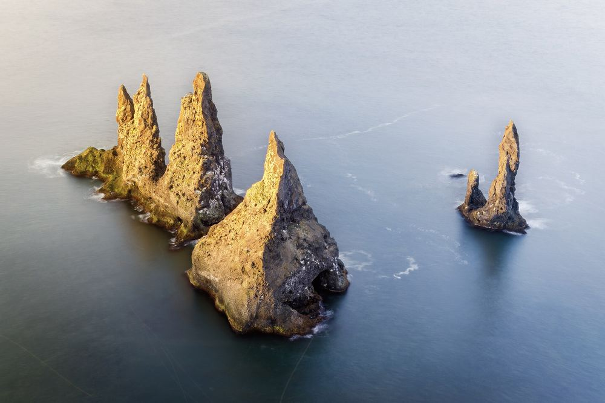
-
09:00
El fuselaje de un avión de la marina de Estados Unidos que cayó en 1973 sobre una playa de arena negra. No murió nadie; el avión quedó ahí y se convirtió en uno de los lugares más fotografiados del país. Alrededor no hay absolutamente nada: arena negra plana hasta el horizonte.
DóndeSobre la ruta 1 · 20 min de Vík
HorarioAl aire libre, siempre · el estacionamiento es pago
Son 4 km a pie de ida y otros 4 de vuelta, dos horas y media en total, sobre arena, sin sombra y sin refugio. Hay un shuttle pago que hace el trayecto. Háganlo a la mañana, con energía.
-
12:30
Pegado al centro de informes del pueblo, luminoso y tranquilo. Trabajan producto de la zona: cordero y trucha ártica.
DóndeVíkurbraut 28, Vík
HorarioTodos los días 12:00–21:00
Qué comer acá
Vienen de ocho kilómetros a pie por la arena negra de Sólheimasandur, y a la tarde siguen con Dyrhólaey y Reynisfjara. Almuerzo liviano.
Lo liviano, y además lo mejorEl sándwich de cordero —pan bien tostado, es lo que más recomiendan— y la trucha ártica, que la pesca gente del pueblo ahí mismo. También hay sopa de cordero.
Las pizzas, para pasado mañanaLas pizzas de horno a leña son buenas —las hacen con bacalao fresco de Hella— pero guárdenlas: el viernes vuelven acá a cenar, y ése es el momento. Al mediodía pesan, y todavía quedan Dyrhólaey y Reynisfjara.
El postre que nombra todo el mundoLa torta de skyr.
-
14:00
Una boca de cueva enorme excavada en el promontorio de Hjörleifshöfði, con el piso de arena negra. Vista desde adentro, el contorno de la entrada tiene exactamente la forma de la cabeza de Yoda — y no es una exageración, se ve de una.
DóndeHjörleifshöfði · 20 min al este de Vík
HorarioAl aire libre, siempre · gratis
Los últimos metros son camino de arena y puede estar blando. Es la única parada del día al este de Vík: todo lo demás queda al oeste.
-
15:30
Un promontorio de roca sobre el mar con un arco natural enorme por el que pasaban barcos, y un faro arriba. Desde el mirador se ve la playa negra extendiéndose hasta perderse. Es el punto más al sur de Islandia continental.
Dónde15 min de Vík · el último tramo es camino de ripio
HorarioAl aire libre · el acceso de arriba a veces está cerrado
Si hay viento fuerte lo cierran, y ahí el viento es cosa seria. Tener la base a 15 minutos es la ventaja: si está cerrado, se vuelve más tarde.
-
16:45
La playa de arena negra con el órgano de basalto —columnas de piedra apiladas como tubos— y los farallones Reynisdrangar, tres agujas de roca que salen del mar. La cuenta islandesa dice que son trolls que se quedaron afuera al amanecer y se hicieron piedra.
Dónde10 min de Vík · el alojamiento da justo ahí
HorarioAl aire libre · estacionamiento, baños y restaurante abiertos
CambióEl 23/02/2026 una tormenta del este socavó el mirador y se llevó la arena de abajo. Las columnas siguen ahí, pero ya no se puede bajar hasta ellas ni entrar a la cueva: se mira desde el borde de arriba. Lo informó la Junta de Turismo de Islandia. Estaban reconstruyendo el mirador — conviene chequearlo antes de ir, el dato es de febrero.
Esto es en serio. Las olas entran mucho más arriba de lo que parece, sin aviso, y se han llevado gente. Con la playa como quedó, la instrucción oficial es quedarse en el borde de arriba. Si quieren pisar arena negra sin riesgo, Víkurfjara —la playa del pueblo mismo— está a pasos del alojamiento.
-
19:00
El más «de salir» de Vík: pizza y cocina de la casa con un toque tailandés, en una casa vieja arriba del pueblo. Es el que eligen los del lugar para una cena con tiempo.
DóndeSuðurvíkurvegur 1, Vík
HorarioTodos los días 12:00–22:00
⚠ Cierra temprano. Varias fuentes dicen que cierra a las 21:00 (alguna dice 22:00), así que cenar a las 20:00 deja una hora justa. Confírmenlo por teléfono ese día. El que sirve más tarde en Vík es Smiðjan, hasta las 22:00.
Qué comer acá
Una casa de 1902 arriba del pueblo, con vista a los farallones de Reynisdrangar. Es el que eligen los del lugar para una cena con tiempo.
Lo que hay que pedir acáEl curry tailandés. Uno de los dueños es medio tailandés, así que no es un guiño turístico: son de verdad. Y es lo único de su tipo en los 24 días del viaje — en un pueblo de la costa sur islandesa, es lo último que uno espera encontrar.
Ojo con repetirTienen trucha ártica y es buena, pero la comieron hoy al mediodía en Halldórskaffi. Y la pizza de acá es famosa —hay gente que maneja tres horas desde Höfn— pero la de pizza es la cena del viernes. Si prefieren la pizza acá y otra cosa el viernes, es un cambio razonable: ésta tiene más fama.
La otra que valeLa hamburguesa Suður-Vík, con cebolla caramelizada y camembert. De postre, helado hecho ahí.
El día grande: Jökulsárlón
Mañana
El día más esperado de Islandia. Horas de ruta hacia el este, entre lenguas de glaciar que bajan de las montañas, con una parada en Fjaðrárgljúfur, un cañón de paredes cubiertas de musgo verde.
Tarde
Hasta que aparece Jökulsárlón: una laguna donde flotan icebergs azules y blancos que se desprenden del glaciar y navegan despacio hacia el mar. Almuerzan ahí mismo, desde un carrito de comida, un sándwich de humar (la cigala islandesa, una langosta chiquita y dulce). Del otro lado de la ruta está Diamond Beach, donde el mar devuelve bloques de hielo que brillan como diamantes sobre la arena negra.
Noche
Y si el pronóstico promete auroras, el plan se da vuelta y todo esto se ve de noche.
Es el único hueco para llegar a la laguna glaciar, y vale el esfuerzo: son 2 h 53 de ida desde Vík, día completo con las paradas. La bifurcación entre la versión día y la versión noche se decide esa misma mañana.
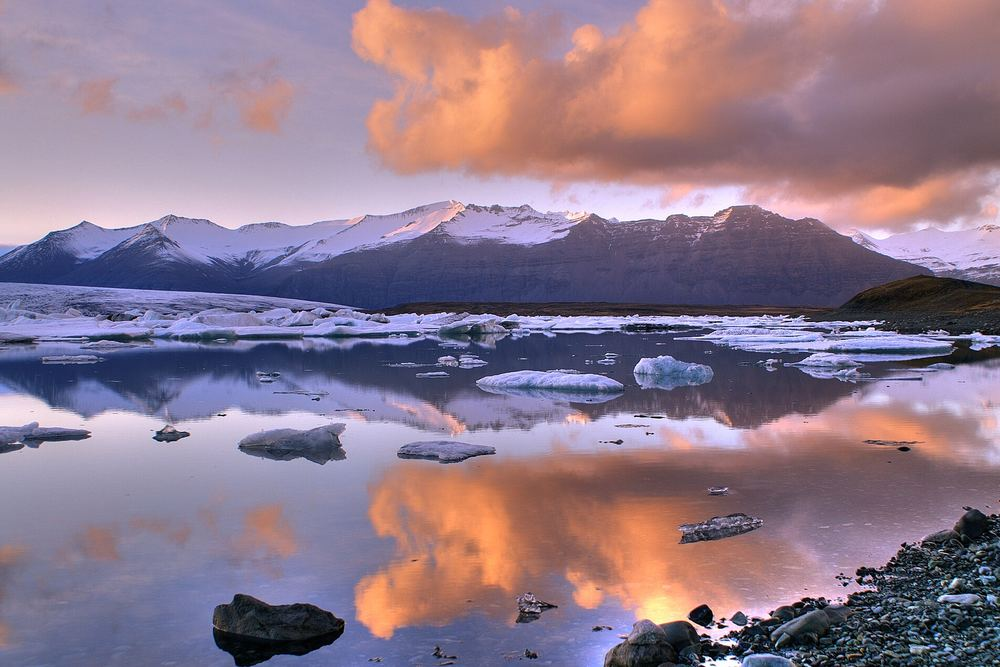
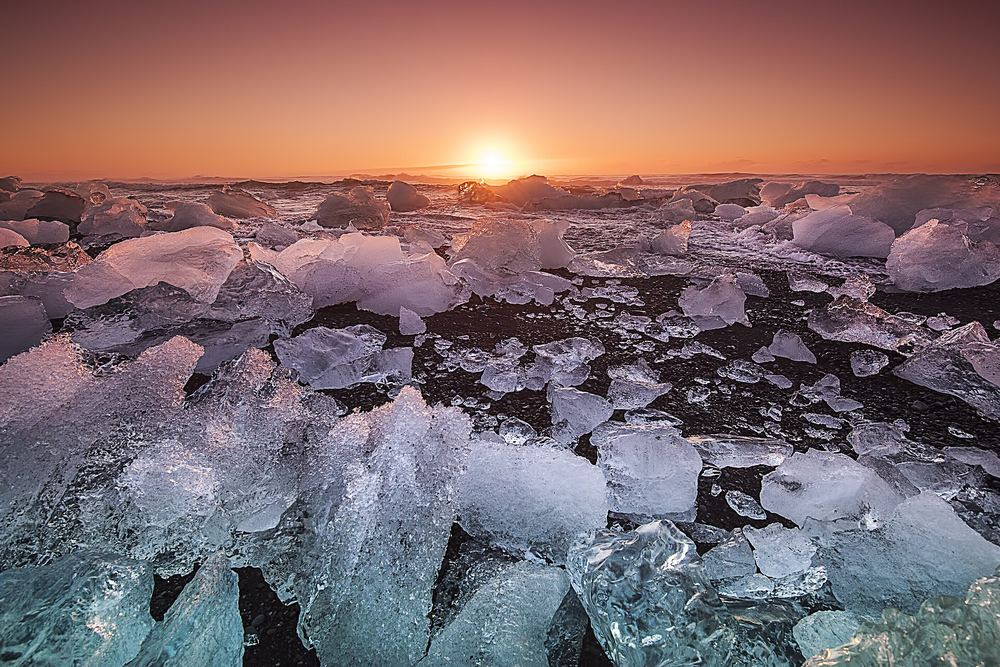
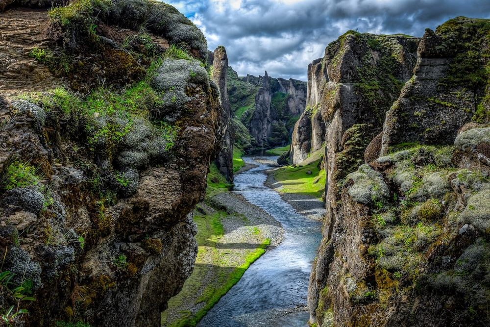
-
09:00Salida de Vík — versión día
Son 2 h 53 hasta la laguna, o 3 h parando en el cañón. La versión noche sale a las 14:00 y vuelve cerca de la 01:25, cambiando el día por el atardecer y las auroras sobre los icebergs. Se decide esa mañana con el pronóstico.
-
10:00
-
13:00
Un food truck de una pareja de Höfn, estacionado al lado de la laguna. Lo suyo es la cigala, la langosta chiquita de esta costa, que traen de Höfn, a una hora de acá. Se come en el mismo estacionamiento: no hay que moverse.
DóndeEstacionamiento principal de Jökulsárlón
Horario11:30–17:00 · dicen que abren todo el año, pero no encontré el horario de fin de septiembre
Si no estáEl café de la laguna, en el mismo estacionamiento: sándwiches del día y sopa de mariscos · en septiembre, 09:00–19:00
Coman antes de caminar la laguna: es la primera comida desde que salieron de Vík. Con cuarenta minutos alcanza.
Qué comer acá
Vienen de casi tres horas de ruta y a la vuelta quedan otras tres. Almuerzo liviano: la cena es a las 19:00 en Vík.
A esto vinieronEl sándwich de cigala: la carne ya pelada y grillada, en pan crocante, con verdes, una salsa amarilla y cebolla frita. La cigala es más dulce y más tierna que el langostino, y no aparece en ningún otro día del viaje.
Si alguno no come mariscosEl mismo camión tiene panchos islandeses y salchichas vegetarianas.
Ojo con repetirLa sopa de cigala del camión y la de mariscos del café son buenas, pero la sopa de pescado ya fue el martes en Fjöruhúsið. Si terminan en el café, mejor el sándwich de salmón o de atún: el de cordero fue ayer en Halldórskaffi.
-
13:40
Una laguna llena de icebergs que se desprenden del glaciar y flotan despacio hacia el mar, algunos azules, algunos con vetas negras de ceniza volcánica. Es de esas cosas que no se parecen a nada. Hay paseos en zodiac entre los hielos si el clima acompaña.
DóndeSobre la ruta 1 · 2 h 53 de Vík · 191 km
HorarioAl aire libre, siempre · los paseos, con reserva
-
14:30
Cruzando la ruta, del otro lado del puente. Los bloques de hielo que salieron de la laguna al mar vuelven a la costa con la marea y quedan varados sobre la arena negra, transparentes, brillando como vidrio. De ahí el nombre.
DóndeAl lado de Jökulsárlón, cruzando la ruta
HorarioAl aire libre, siempre · gratis
-
15:30Vuelta a Vík
Son 2 h 53 de una tirada. Si vuelven con hambre antes, Systrakaffi en Kirkjubæjarklaustur está sobre la ruta, a mitad de camino, y abre 12:00–21:00: es lo único abierto en ese tramo.
Svartifoss quedó afuera. La cascada de columnas de basalto, en Skaftafell, es tentadora — pero llegan 17:00, la caminata son 1 h 30 y de ahí a Vík hay otras 1 h 58: volverían 20:30, con dos horas de ruta a oscuras. Sólo si el día viene muy adelantado y el cielo está limpio.
-
18:30De vuelta en Vík
Tercera y última noche en Vík.
Ojo con la luz. En Jökulsárlón el sol se pone 18:55, diez minutos antes que en Vík: está 250 km más al este. Entre esa hora y las 20:30 no hay nada abierto en el camino.
-
19:00
Vuelven molidos de un día de casi diez horas. Vayan a Halldórskaffi: el miércoles cenaron en Smiðjan y el jueves en Suður-Vík, así que con éste usan los tres lugares del pueblo sin repetir ninguno. Y es la noche de sus pizzas de horno a leña, que el jueves al mediodía convenía saltear. Cierra 21:00; Smiðjan, 22:00.
DóndeEn el centro de Vík
⚠ Cierra temprano. Halldórskaffi cierra a las 21:00: cenar a las 20:00 deja una hora justa. Si se hace más tarde, Smiðjan sirve hasta las 22:00 y Strondin hasta las 21:30 o 22:00, según la fuente.
Círculo Dorado y cierre en Blue Lagoon
Mañana
La despedida de Islandia llega con sus grandes clásicos. Gullfoss, una cascada que se desploma en dos escalones hacia una grieta profunda, y Geysir, donde el Strokkur lanza una columna de agua hirviendo al aire cada pocos minutos, sin fallar nunca.
Tarde
Almuerzan adentro de un invernadero, entre plantas de tomate y luces de cultivo, una sopa de tomate recién cosechado con pan casero. Y al final, la Laguna Azul: agua termal celeste y humeante en medio de un campo de lava negra, con barro blanco en la cara y el cielo oscureciendo encima.
Noche
En la última cena islandesa prueban el rúgbrauð (pan de centeno oscuro y dulzón, que se hornea enterrado en la tierra caliente).
El día más largo de Islandia: 5 h 40 de manejo puro, 11 h de punta a punta. Dos paradas del Círculo Dorado y Blue Lagoon como final de la travesía.
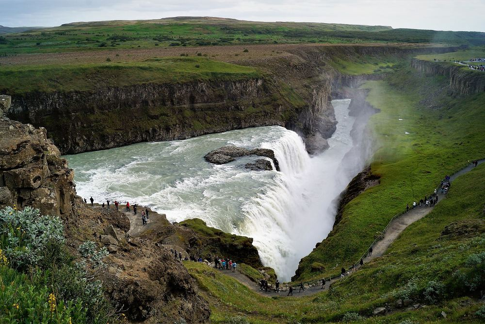
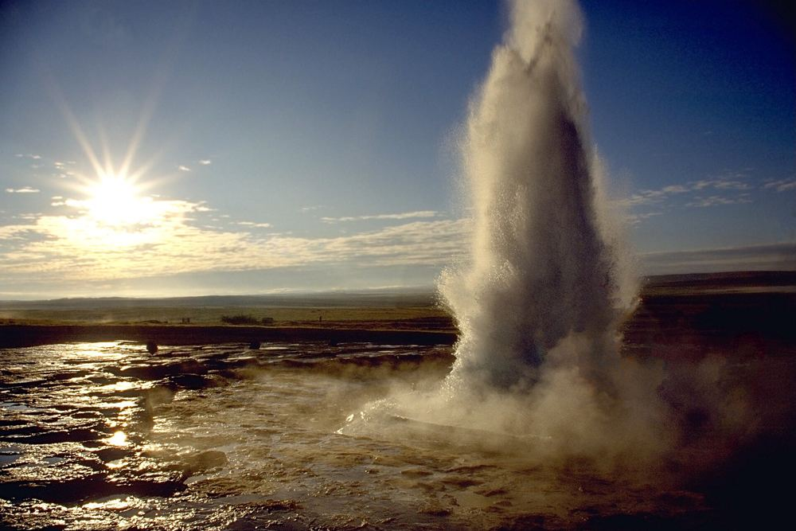
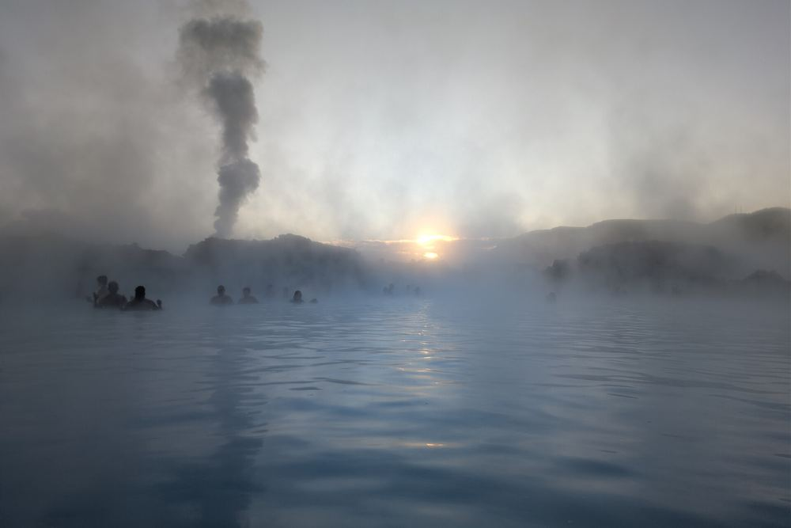
-
09:00Salida de Vík
El día más largo del tramo: 5 h 40 de manejo puro y 11 h de punta a punta. Dejan Vík y no vuelven.
-
11:35
Una cascada enorme de dos saltos en ángulo, que no cae hacia afuera sino hacia adentro de una grieta: desde arriba parece que el río desaparece en la tierra. Gull quiere decir «oro» en islandés, y de ahí sale el nombre de toda la ruta del Círculo Dorado.
Dónde2 h 35 de Vík · 177 km
HorarioAl aire libre, siempre · gratis
Con viento del norte empapa de verdad, no es una llovizna. Impermeable a mano.
-
12:30
El campo de géiseres. El Geysir original —el que le dio el nombre a todos los géiseres del mundo— ya casi no erupciona, pero al lado está el Strokkur, que revienta 15 o 20 metros de alto cada 5 a 10 minutos, sin fallar. Alrededor hay pozas hirviendo y olor a azufre.
Dónde10 minutos de Gullfoss
HorarioAl aire libre, siempre · gratis
No hace falta esperar mucho ni tener suerte: si te perdiste una, en cinco minutos hay otra. Pararse del lado que no sopla el viento.
-
14:00
Una chacra de invernaderos de tomate con dos lugares para comer. Las mesas del restaurante grande —entre las plantas, con las luces de cultivo prendidas— están reservadas a más de 45 días, así que van sin reserva a una de las dos opciones del mismo terreno. La especialidad es la sopa de tomate con pan recién hecho. En la chacra también crían caballos islandeses.
DóndeReykholt · 18 min de Geysir, sobre el camino de vuelta
PrimeroLa barra del restaurante grande: sopa de tomate en taza con pan, adentro del invernadero famoso · barra 09:00–17:00 · sin reserva
Si está llenaVínstofa Friðheima, el bar de vinos, en un invernadero más viejo del mismo terreno, entre tomates y parras · 12:00–22:00, cocina hasta 21:00 · sin reserva hasta 5 personas
Si quieren probar suerte con una mesa del restaurante grande, miren Dineout unos días antes: se liberan lugares por cancelaciones.
Salgan 15:15 como máximo. De acá a Blue Lagoon hay 136 km y dos horas de ruta: es el tramo largo del día y el que define si llegan al turno.
Qué comer acá
Todo lo que sirven sale de estos invernaderos. Es almuerzo: después vienen dos horas de ruta y a las 17:15 se meten al agua en Blue Lagoon, así que conviene salir livianos.
En la barra del restaurante grandeLa sopa de tomate en taza con pan casero: es lo clásico de la casa y alcanza. También hay postres y tragos.
En VínstofaLa misma sopa de tomate con pan, o una bruschetta: de tomate y albahaca, o de tomate con trucha ahumada. Si tienen más hambre, la ensalada de tomatitos con mozzarella. De postre, el cheesecake con mermelada de tomate.
Para otro díaLas pastas —ravioles de burrata y tomate, tagliolini negros con vieiras— y la tabla de quesos: llenan demasiado para lo que queda de tarde.
OjoNo está confirmado que en Vínstofa la sopa sea libre como en el salón grande: cuenten con un plato.
-
17:15
El cierre de la vuelta por Islandia: una laguna de agua celeste lechosa en el medio de un campo de lava, a veinte minutos del aeropuerto. Es la postal icónica del país. Adentro hay sauna, baño de vapor, una poza fría, la barra de máscaras de sílice y un bar al que se llega nadando. El sol se pone 19:17: se meten justo para el atardecer.
DóndeGrindavík · 2 h 01 de Friðheimar, 136 km
HorarioTurno 17:00 · la laguna cierra 22:00
Lleven el voucher a mano — lo piden al llegar. El ticket dice que son flexibles con las demoras, pero avisa que al que llega tarde puede tocarle esperar en el check-in: no es una ventana garantizada. Llegando 17:15 no deberían tener drama.
El agua es salada y con sílice: deja el pelo como paja. Pónganse el acondicionador que hay en las duchas antes de meterse, y átense el pelo.
-
20:10Llegada al hotel
El hotel, en Keflavík. Salen de la laguna cerca de las 19:45, después de unas dos horas y media adentro, y son 23 minutos de ruta.
-
20:30Take Off Bistro
El restaurante del hotel mismo. Clásicos islandeses y algo internacional. Después de once horas de ruta y las termas, la gracia es no tener que volver a manejar. Cierra 22:00: llegan con hora y media de margen.
DóndeEn el mismo hotel
HorarioTodos los días 17:30–22:00
Qué comer acá
El restaurante del hotel mismo. Después de once horas de día y las termas, la gracia es no volver a subirse al auto.
Lo que pediríaEl camembert horneado con tacos de pan de centeno. El rúgbrauð —pan de centeno oscuro y dulzón, que tradicionalmente se hornea enterrado en suelo geotermal— es de las cosas más islandesas que hay y no aparece en ningún otro día. Es la última noche en Islandia: es ahora o nunca. Para acompañar, las alitas de coliflor rebozadas.
Ojo con repetirTienen fish and chips y es lo que más nombran, pero pasado mañana lo cenan en Edimburgo, en Bertie's. Después de un día de once horas y las termas, tampoco es la noche para algo frito.
Lo demásHamburguesas, bifes, pescado y ensaladas. La hamburguesa vegana con papas de batata es la otra que nombran.
Edimburgo
Cuatro noches sobre el Grassmarket, la plaza que queda justo abajo del peñón donde está el castillo: casi todo se hace caminando desde la puerta. El tramo tiene tres partes que se van turnando: la ciudad vieja a pie, un día entero por las Tierras Altas y las locaciones de la serie Outlander. Y fines de septiembre es la mejor época para ir: el festival grande de la ciudad ya pasó, los precios bajaron y Edimburgo vuelve a su tamaño normal.
Islandia → Escocia
Mañana
Adiós, Islandia. Devuelven el auto con las primeras luces y vuelan a Escocia con Icelandair: salen de Keflavík a las 10:00 y llegan a Edimburgo a las 13:20.
Tarde
Un tranvía los deja en la ciudad vieja y de golpe todo es piedra oscura: callecitas en subida, Victoria Street curvándose con sus fachadas de colores y la Royal Mile coronada por el castillo.
Noche
Cuando cae la noche, un guía los lleva por los rincones más sombríos de Edimburgo contando historias de fantasmas, brujas y ladrones de tumbas. Cierran con fish and chips (pescado rebozado con papas fritas, el clásico británico) y una pinta en un pub.
La mañana más apretada del viaje. Después, todo se afloja: llegan al mediodía, la tarde es de reconocimiento y la noche termina caminando la ciudad vieja a oscuras.
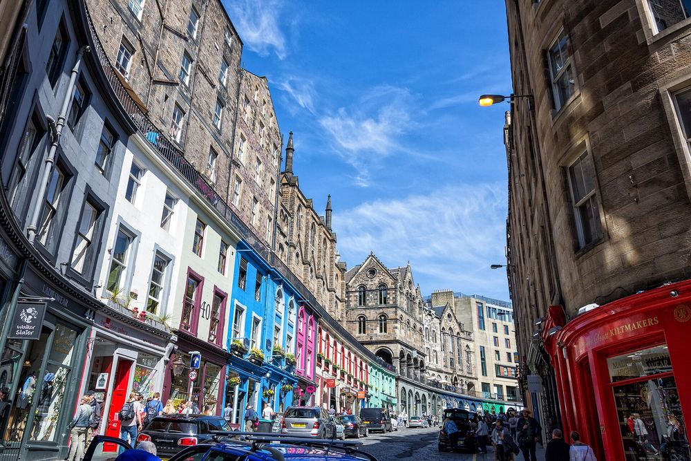
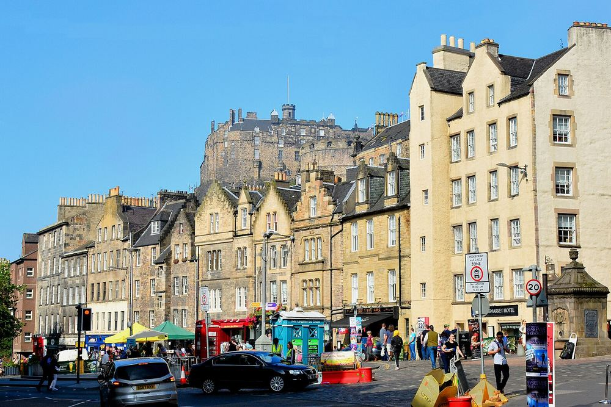
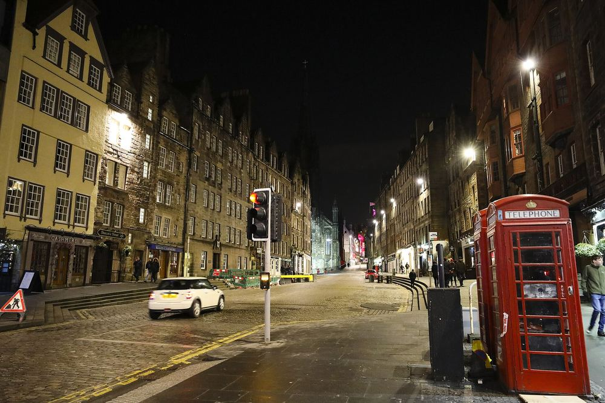
-
07:15Salida del hotel, en Keflavík
Duermen a diez minutos del aeropuerto justamente por esta mañana. Salgan antes de las 08:30: entregar el auto más temprano no se penaliza, y les saca de encima el único riesgo real del día.
-
08:30Devolución del auto
Seis días de manejo que terminan acá. Revisen que no quede nada en los bolsillos de las puertas ni en el baúl: es el momento en que más cosas se pierden.
DóndeAeropuerto de Keflavík · falta confirmar si es en la terminal o en la oficina de Fuglavík 43, con shuttle
Sacarle fotos al auto por los cuatro costados antes de entregarlo, igual que al retirarlo. Es lo que cierra la discusión si después aparece un cargo.
-
10:00Icelandair FI434 · KEF → EDI
Tres horas y veinte de vuelo. Acá se sale de Schengen: el Reino Unido está afuera, así que al llegar sí hay control de pasaportes — es el momento en que se usa la ETA que ya tienen los dos.
HorarioSale 10:00 · llega 13:20
-
13:20Llegada a Edimburgo
Migraciones y valijas. El aeropuerto está a 12 km del centro, al oeste, y la ciudad se empieza a ver enseguida desde el tranvía.
La ETA está atada al número de pasaporte y no se imprime: el oficial la ve al escanear. Igual conviene tener el mail de confirmación a mano en el celular.
-
13:50El tranvía al centro
La parada está pegada a la terminal, afuera de la puerta de llegadas. Va derecho por el oeste de la ciudad hasta Princes Street, con el castillo apareciendo a la izquierda sobre el final del recorrido.
DóndeBajan en Princes Street o St Andrew Square · 12 min a pie hasta el Grassmarket, cuesta arriba
HorarioUnos 35 minutos · sale cada 7 a 10 minutos
El plan B es el bus Airlink 100, que tarda parecido y deja en Waverley. Con dos valijas grandes, el tranvía es más cómodo.
-
15:30El departamento, sobre el Grassmarket
Un pend es un pasaje cubierto que atraviesa un edificio: el acceso no es una puerta a la calle sino un túnel corto. Por eso la anfitriona insiste con leer las instrucciones antes de llegar y no buscar el número en la vereda.
HorarioCheck-in 16:00 a 21:00 · las valijas se pueden dejar desde las 12:00 avisando antes
-
16:00
La primera vuelta, sin plan. Del Grassmarket sale Victoria Street, la curva de fachadas de colores que trepa hasta la Royal Mile — la calle que todo el mundo fotografía y de la que se dice que inspiró el Callejón Diagon. Arriba se dobla hacia St Giles, la catedral del medio de la Milla.
DóndeTodo a menos de 10 minutos de la puerta, cuesta arriba
Hoy es de reconocimiento, no de visitas: el castillo, Holyrood y St Giles por dentro son de mañana. La idea del día es entender la forma de la ciudad, que es una espina de pescado sobre una colina.
-
17:00Algo de comer, donde caiga
Sin reserva y sin lugar elegido. Hoy no hubo almuerzo, así que puede ser algo salado y no sólo un café. Es el hueco que hay entre la caminata y el tour, y sirve para sentarse antes de dos horas de pie.
-
18:30Free tour «Leyendas Negras y Fantasmas»
Dos horas por la Old Town de noche: los closes tapiados, la peste, los ladrones de cuerpos y el Greyfriars Kirkyard. El sol se pone 18:59, así que arranca con luz y termina a oscuras — que es exactamente el punto.
Horario18:30 a 20:30 · dos horas
Es free tour: se reserva online igual, y al final se paga a voluntad. Falta confirmar el punto de encuentro — los de esta empresa salen casi todos de la estatua de David Hume, sobre la Royal Mile, a ocho minutos del depto.
-
20:45
La cena del domingo es de pescado: una casa grande dedicada al fish and chips, al pie de Victoria Street, con salón para sentarse. Es la única noche de Edimburgo que no es de carne.
Dónde9 Victoria Street · 5 min a pie del depto
HorarioDomingo 12:00–22:00 · se puede reservar por Dish Cult, pero tiene lugar para trescientos
La cocina cierra a las 22:00. El tour termina 20:30, así que llegan con margen, pero no se demoren en el camino.
Qué comer acá
Es la noche del fish and chips del viaje, y la casa no hace otra cosa.
Qué pedirEl clásico de eglefino —haddock—, que es el pescado con el que se hace en Escocia, rebozado y con papas fritas.
Ojo con repetirSi en Kaffi 59 ya pidieron fish and chips, éste es el segundo del viaje. El haggis es mañana a la noche en el White Hart, y la hamburguesa, el martes.
-
21:45
Un pub de la misma plaza, a cinco minutos de Bertie's y a uno del depto. Es para una pinta y cerrar la noche, no para comer.
DóndeGrassmarket · pegado al depto
HorarioDomingo hasta las 00:00
Los fines de semana hay música en vivo desde las 21:00, pero no encontré confirmado si el domingo también: lo avisan en su Instagram, @fiddlersarms. Si está lleno, el White Hart y The Last Drop están en la misma plaza.
Castillo, Royal Mile y Calton Hill
Mañana
Hoy Edimburgo se recorre de arriba hacia abajo. Empiezan en el castillo, clavado sobre la roca de un volcán apagado, donde se guardan las Honours of Scotland (las joyas de la corona escocesa) y donde a la una en punto se dispara un cañonazo que se escucha en toda la ciudad.
Tarde
Bajan despacio por la Royal Mile, metiéndose en los closes (pasajes angostos y escondidos entre los edificios), uno de ellos escenario de la serie Outlander. Al atardecer suben a Calton Hill para ver la ciudad entera con sus agujas y chimeneas.
Noche
Media docena de ostras escocesas en un salón victoriano de 1826, y a cenar en The White Hart Inn, un pub que sirve pintas desde 1516: haggis (el plato nacional escocés, un embutido especiado de cordero y avena) con neeps and tatties (puré de nabo y de papa).
El día clásico de Edimburgo, y el único con horario de entrada. Arranca arriba de todo y va bajando: castillo, la Milla entera, los callejones, y el cerro del final para verla completa.
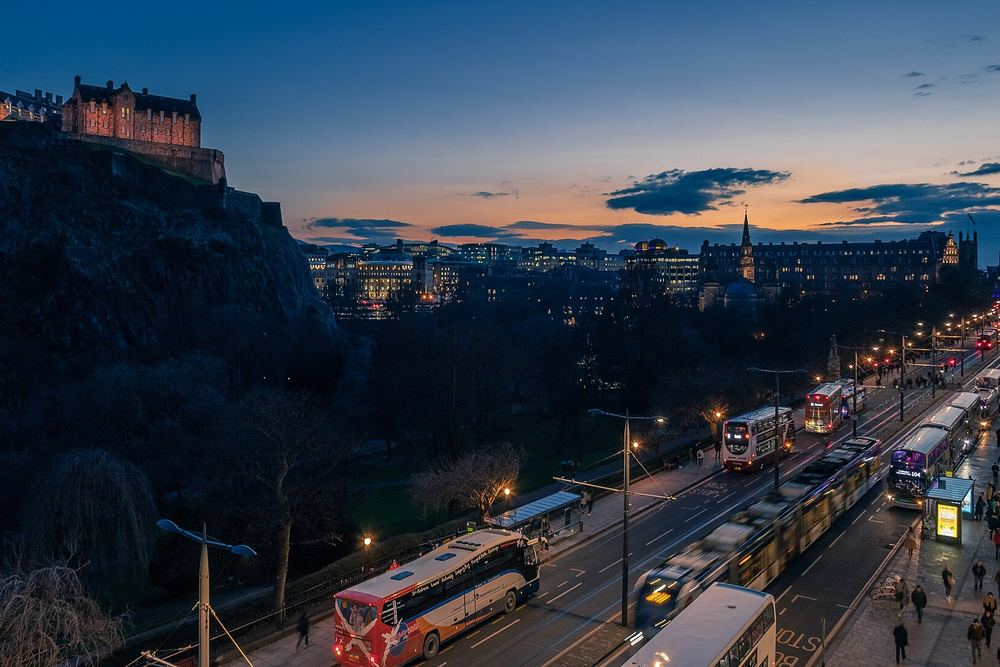
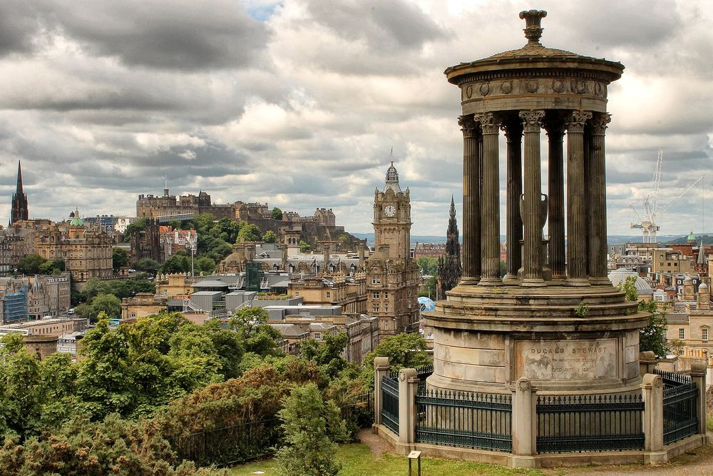
-
09:15
La entrada es con horario asignado y conviene estar quince minutos antes: la explanada de acceso tiene su propia cola de control.
DóndeCastlehill, arriba de todo de la Royal Mile · 10 min a pie cuesta arriba desde el Grassmarket
Desde el Grassmarket se sube por The Vennel, una escalera angosta que sale de la punta oeste de la plaza: es el camino más corto y además tiene la mejor vista lateral del peñón.
-
09:30Primero, las Joyas de la Corona
Entrar y subir derecho a los Honours of Scotland sin parar en nada: son la corona, el cetro y la espada más viejos de las islas británicas, y la única cola que después se hace larga de verdad. En la misma sala está la Piedra del Destino, sobre la que se coronaba a los reyes de Escocia — Inglaterra se la llevó en 1296 y la devolvió recién en 1996.
El resto del castillo se puede recorrer en cualquier orden. Esto no: a las 11 la fila da la vuelta al patio.
-
10:15El castillo con la audioguía
Crown Square, el Palacio Real donde nació Jacobo VI, la capilla de Santa Margarita —del año 1130, el edificio más viejo que sigue en pie en Edimburgo—, el cañón medieval Mons Meg, el Scottish National War Memorial y las panorámicas desde las murallas.
HorarioDos horas largas · las audioguías ya están incluidas en la reserva
La audioguía cambia el ritmo: sin ella el castillo se hace en una hora, con ella en dos y media. Está reservada, así que el día está calculado con ella.
-
13:00El cañonazo de la una, desde adentro
El One O'Clock Gun se dispara todos los días menos los domingos desde 1861. Nació para que los barcos del puerto de Leith pusieran los relojes en hora, y quedó por costumbre. Si el recorrido se estira, mejor: los agarra adentro y se escucha de cerca.
Horario13:00 en punto · lunes a sábado
-
13:30Almuerzo libre, algo liviano
Sin lugar elegido: cualquier café de la Royal Mile, bajando. Liviano a propósito — después bajan la Milla entera y suben a Calton Hill, y la comida fuerte es el haggis de la noche.
-
14:30
La catedral del medio de la Royal Mile, con la torre de corona abierta que se ve desde toda la ciudad. Adentro, la Thistle Chapel: una capilla chiquita, de madera tallada hasta el delirio, para los caballeros de la Orden del Cardo.
HorarioEntrada libre con donación · 20 a 30 minutos
Va como parte del paseo, no como excursión aparte. Media hora adentro alcanza y sobra.
-
15:15
Los closes son los pasajes angostos que bajan de la Royal Mile hacia los costados, y son lo mejor de la calle: la Milla de arriba es para turistas, los closes son la ciudad. Tweeddale Court es un patio de piedra escondido detrás de una puerta cualquiera. Y Bakehouse Close es la imprenta de Jamie en Outlander, filmada tal cual está, sin decorado.
DóndeBakehouse Close, 146 Canongate · pegado al Museum of Edinburgh
Es un patio de vecinos, no un set: se entra, se mira, se saca la foto y se sale sin hacer ruido.
-
16:15
El último tramo, el más tranquilo: acá la Royal Mile deja de ser negocio de souvenirs y vuelve a ser barrio. Al fondo está Holyrood, el palacio del rey en Escocia, y detrás el parque con el volcán apagado.
Holyrood no entra: es una visita de dos horas y el día ya tiene dueño. Se ve la fachada de paso.
-
17:15
El cerro bajo del extremo este, quince minutos de subida por escalera. Arriba hay un decorado raro y perfecto: el Monumento Nacional, una copia del Partenón que se quedó sin plata a mitad de obra y quedó así, con doce columnas y nada más. Desde ahí se ve la Old Town entera de perfil, con el castillo en una punta y el mar del Firth of Forth atrás.
DóndeEntrada por Regent Road · al aire libre, siempre abierto y gratis
El sol se pone 18:56. El plan del día los baja antes, a las 18:30; si aguantan media hora más tienen la ciudad encendiéndose, que es la mejor foto de todo el tramo.
-
18:45
Bajando de Calton Hill queda de paso, a ocho minutos. Es la barra de ostras más vieja de Escocia — de 1826 — y por dentro sigue igual: salón victoriano, techos altos y murales de azulejos pintados a mano. Las ostras son escocesas de roca, y se venden más de mil por semana.
Dónde19 West Register Street · New Town, saliendo de Princes Street
HorarioEl lunes, de 11:00 a 23:00
Acá es entrada, no cena: media docena y una pinta en la barra del Circle Bar, cuarenta minutos, y a comer al White Hart. El salón de ostras de al lado es un restaurante en serio — si se sientan ahí, la cena reservada sobra.
-
19:30Vuelta al depto · ducha rápida
Está puesto a propósito. El día arrancó a las nueve y fueron más de nueve horas de pie. Antes eran sesenta minutos y ahora son cuarenta y cinco: las ostras se comen ese rato, y es lo único que cuestan.
-
20:15
El pub más viejo de la ciudad, sobre la misma plaza, y con mesa. Es la noche escocesa del tramo: el haggis se come acá.
Dónde34 Grassmarket · abajo del depto
HorarioReservado a las 20:15
Después, el Frankenstein's queda a cinco minutos: un pub metido adentro de una iglesia neogótica, con el monstruo que baja del techo cada hora. Es opcional y va sólo si sobra energía.
Qué comer acá
El pub más viejo de Edimburgo, funcionando desde 1516. Esta es la noche del haggis: va a la cena y no al mediodía, porque es pesado.
A esto vienenEl haggis Chieftain con neeps and tatties —puré de nabo y de papa—. Es el plato nacional escocés, y el de acá es premiado.
Qué no, y por quéEl pastel de carrillón de vaca es el plato de la casa y está muy bien — pero el pastel que hay que comer es el del Scran & Scallie el miércoles, que viene con un hueso de tuétano parado en el medio. Y el fish and chips ya fue anoche, en Bertie's.
También hayOpciones veganas, vegetarianas y sin gluten.
Highlands · Glencoe, Lago Ness e Inverness
Mañana
Hoy se van a las Highlands, las Tierras Altas, en una camioneta sólo para ellos dos y con un guía que cuenta todo en castellano. Primero aparecen las hairy coos (las vacas escocesas peludas, con el flequillo tapándoles los ojos). Después, Glencoe: un valle inmenso de montañas oscuras, niebla y cascadas, donde en 1692 hubo una de las masacres más recordadas entre clanes.
Tarde
Siguen hasta el Lago Ness, largo y profundo, donde nadie deja de mirar el agua por las dudas; pasan por Inverness, la capital de las Highlands, y a la vuelta frenan en Pitlochry, un pueblito de piedra entre bosques.
Noche
Vuelven de noche, cansados y felices, a una hamburguesa de carne escocesa madurada en el hueso.
Trece horas y 585 kilómetros, en una camioneta que es sólo para los dos y con un guía que habla en castellano. Es el día más largo del viaje después de Jökulsárlón, y el único de Escocia que sale de la ciudad.
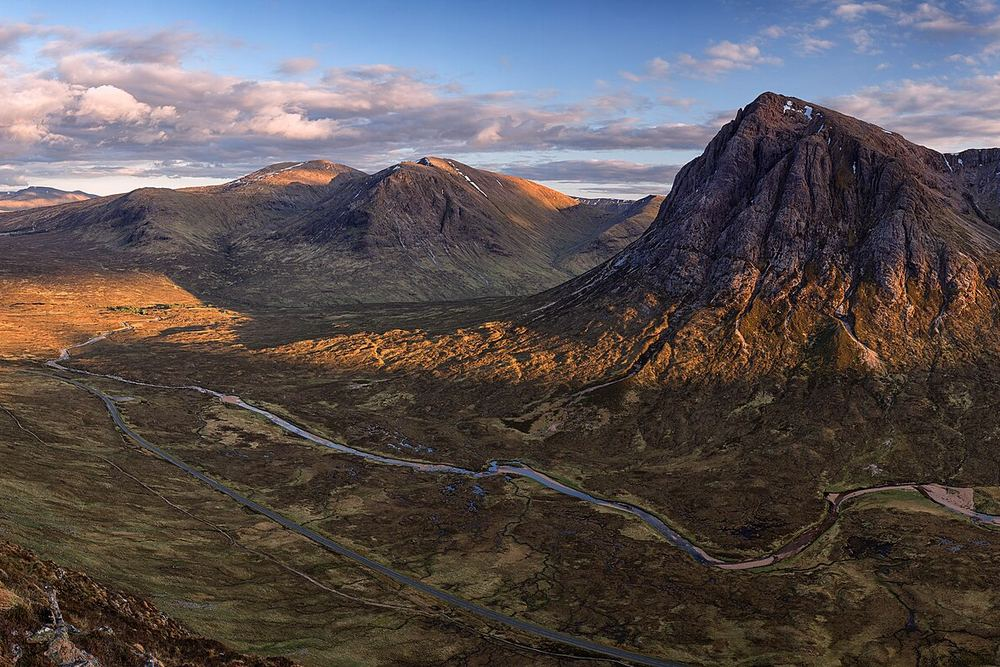
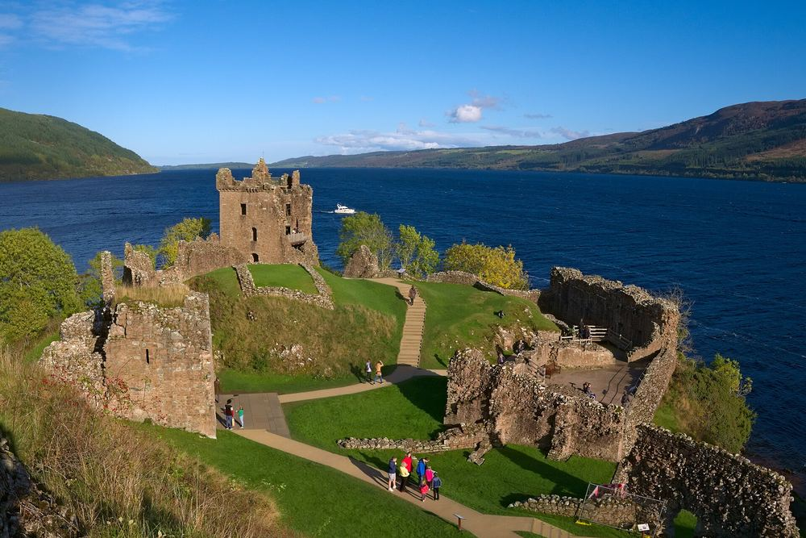
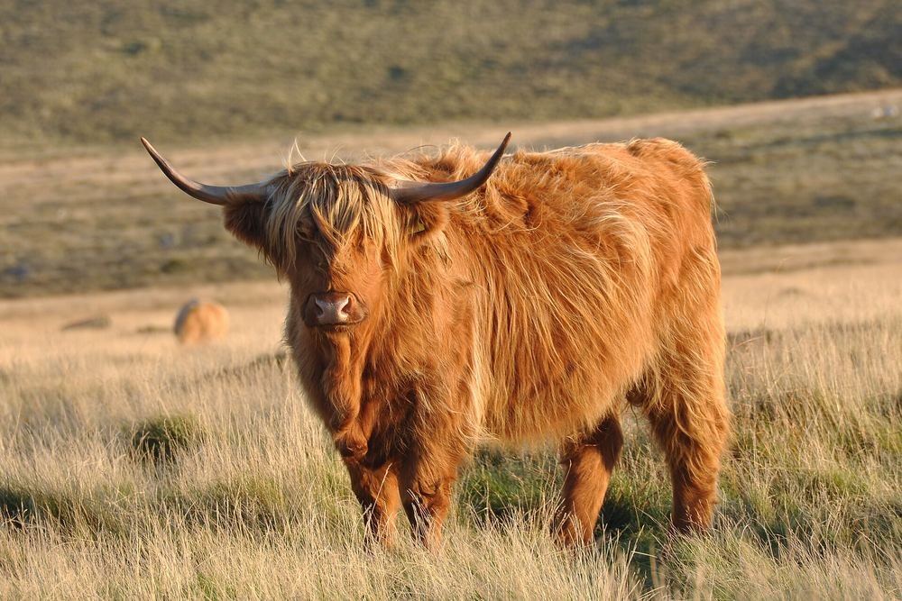
-
07:00Salir del depto
Del Grassmarket a Regent Road hay unos 20 minutos a pie, bordeando la Old Town por abajo. Todavía es de noche: el sol sale 07:12.
La empresa pide estar 15 minutos antes y avisa que el tour sale puntual y no espera a nadie, sin reintegro. Con taxi son ocho minutos y la mañana deja de ser un problema.
-
07:15
-
09:00
Primera parada, ya en territorio de las Tierras Altas: una granja vieja donde están las Highland cattle, las vacas de pelo largo y cuernos anchos que son la postal de Escocia. Es también la parada del café y el desayuno.
HorarioMedia hora
En temporada baja las meten al establo y no está garantizado verlas — pero eso es de noviembre a abril. En septiembre están afuera.
-
10:30
El valle glaciar entre paredes negras: probablemente el más impresionante que se puede cruzar por ruta en Europa. Paran en tres puntos distintos — frente al Buachaille Etive Mòr antes de entrar, a la entrada del valle para ver las Three Sisters, y abajo, junto al lago. Es el paisaje que uno tiene en la cabeza cuando dice «Highlands».
HorarioMedia hora de paradas, más el camino
Glencoe también tiene historia negra: acá los Campbell mataron a los MacDonald en 1692, después de haber comido y dormido en sus casas trece días. En Escocia todavía se lo nombra.
-
13:00
Un pueblito en la punta sur del lago, donde el Canal de Caledonia baja al agua por una escalera de cinco esclusas que se abren de a una. Hora y media libre, y es la parada de la comida: hay restaurantes, comida rápida y supermercado, y está permitido llevar la propia.
Horario1 h 30 de tiempo libre
-
13:00El crucero por el lago · opcional
Cincuenta minutos navegando el Ness y volviendo al mismo Fort Augustus. El lago tiene 37 km y más agua que todos los lagos de Inglaterra y Gales juntos: desde arriba del barco se entiende por qué la leyenda aguantó tanto.
HorarioSale 13:00 · 50 minutos · £22 por persona
Se compra en el momento, con el guía, en efectivo o tarjeta — no hay que reservar. Queda a propósito para decidir ese día según el clima y las ganas. Si lo toman, se les va la hora y media libre entera: es una cosa o la otra.
-
15:30
La capital de las Highlands y la ciudad más al norte del Reino Unido. Hora y media para caminar el centro por su cuenta: la costanera del río Ness y la catedral, que está siempre abierta al público.
Horario1 h 30 libre
Llegan bordeando los 37 km del lago desde Fort Augustus, así que ese tramo de auto también cuenta como paseo.
-
17:30
-
20:15De vuelta en Edimburgo
Los dejan donde arrancaron, en Regent Road. La cena queda de camino al depto: 9 minutos a pie, bajando hacia North Bridge.
-
20:30
La hamburguesa de autor del viaje. Una casa de Glasgow que se hizo conocida por la carne: vaca de pastura, madurada en el hueso. Después de trece horas de Highlands, una cena que no pide pensar.
Dónde7-9 North Bridge · 9 min a pie desde Regent Road, y de ahí al depto son 13
HorarioMartes 11:00–22:00 · se reserva por Dish Cult
Qué comer acá
Noche de hamburguesa, sin culpa: vienen de un día entero en la camioneta, y mañana la cena es la de despedida.
Cómo es la carneUn medallón de 5 onzas —unos 140 gramos— de vaca de pastura madurada en el hueso de 25 a 40 días. Se puede pedir smashed: aplastada contra la plancha, más fina y con los bordes tostados.
Las que pediríaLa Wolf: doble queso americano, panceta, cerdo desmechado a la barbacoa, cebolla crocante y mayonesa picante. La Philly cheesesteak, con ojo de bife escocés. Y para el que se anime, la Luther, que en vez de pan lleva donas.
Para acompañarTodas vienen con papas fritas o con tater tots, bocaditos fritos de papa rallada.
Lallybroch, el Forth Bridge y Stockbridge
Mañana
Último día en Escocia, a otro ritmo. Arrancan con un full Scottish breakfast (el desayuno escocés completo: huevos, panceta, porotos y haggis) y van en taxi hasta Midhope Castle, una torre de piedra sin techo que en Outlander es Lallybroch, la casa de Jamie.
Siguen a South Queensferry, un pueblo junto al mar desde donde se ven los tres puentes gigantes sobre el río Forth, entre ellos el Forth Bridge, rojo, de hierro y del siglo XIX. Si la sopa del día es cullen skink (sopa espesa de pescado ahumado con papa), ése es el almuerzo.
Tarde
Vuelven en tren y la tarde es para perderse en Dean Village, un rincón de casitas de cuento junto al río, y seguir la orilla hasta Stockbridge.
Noche
La despedida de la ciudad es una cena con steak pie (pastel de carne cocida lento bajo masa hojaldrada).
El día sigue armado corto a propósito: después de trece horas de Highlands, tiene una sola salida —que ahora se estira hasta el mediodía— y la tarde entera sin agenda. Es la despedida de la ciudad, no otra maratón.
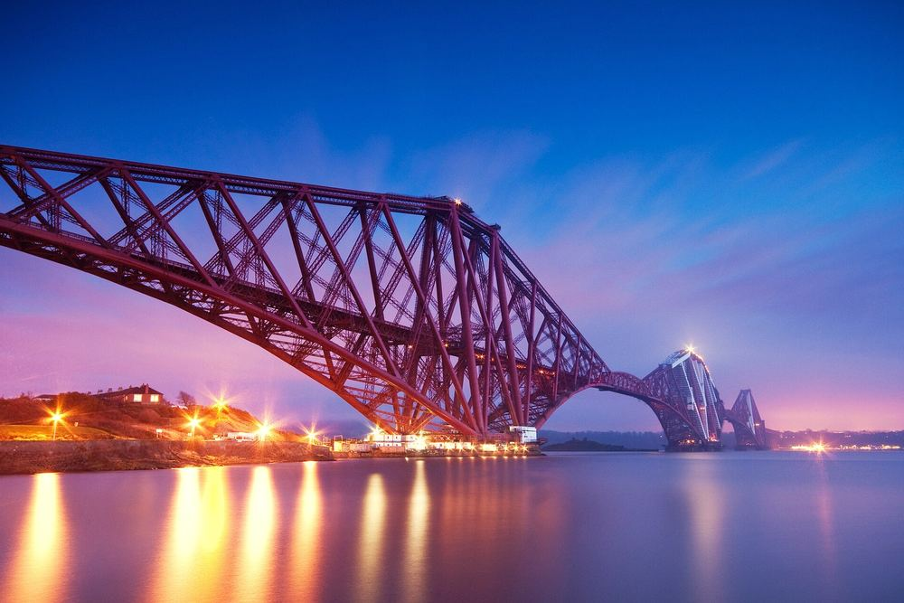
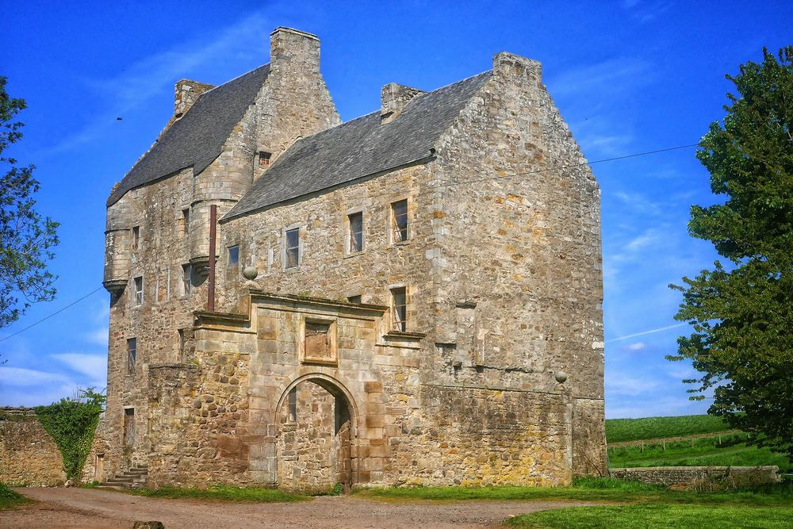
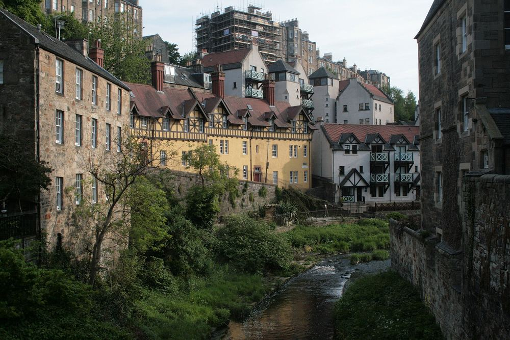
-
09:00
Único día del tramo que arranca despacio, y el único con tiempo para el desayuno escocés completo: panceta, huevos, haggis, hash browns y porotos. Un café chico de la plaza, pegado al depto.
Dónde29 Grassmarket · a pasos de la puerta
HorarioTodos los días 07:00–19:00 · sin reserva
El taxi pasa a las diez: con una hora alcanza. Y pesado a la mañana está bien, porque el almuerzo en el Ferry Tap va liviano.
-
10:00Taxi privado al Midhope Castle
Unos 25 km al oeste, adentro de la finca de Hopetoun House, cerca de South Queensferry. El taxi es un traslado, no un tour: los lleva, espera mientras ven el castillo y después los deja en el pueblo. No vuelve a Edimburgo — la vuelta es en tren.
DóndeAbercorn, South Queensferry · unos 35 min desde el Grassmarket
Todavía se está cotizando: se pidió ida, 45 minutos de espera y bajada en la High Street de South Queensferry. Hasta que no esté cerrado, este día no tiene forma definitiva.
-
10:35
Una torre del siglo XVI, de piedra rojiza, que en Outlander es Lallybroch: la casa de los Fraser, el lugar al que Jamie vuelve siempre. Se ve sólo por afuera —adentro está apuntalado y cerrado al público—, así que es una visita corta: tres cuartos de hora alcanzan, y el punto es estar ahí y la foto.
HorarioDe 9:00 a 18:00 · se entra al llegar, no hay turnos
La entrada se compra online antes de viajar, por CitizenTicket, y no siempre la venden en la puerta. Y conviene chequear que ese día esté abierto: Hopetoun cierra el acceso cuando hay bodas, rodajes o eventos, y no siempre se avisa con tiempo.
-
11:20
Ocho kilómetros, diez minutos. Un pueblo de piedra sobre el agua, con una sola calle empedrada del mil seiscientos y los puentes del Forth encima. Desde acá el día sigue a pie.
No se agregan más locaciones de Outlander —Blackness Castle, Doune, Culross— a propósito. Lallybroch era la prioridad; lo demás convierte el día en otra excursión.
-
11:35
El muelle viejo, justo abajo del Forth Bridge: dos kilómetros y medio de acero rojo remachado, de 1890, y todavía es el que cruzan los trenes. Al lado están el colgante de 1964 y el Queensferry Crossing de 2017. Tres maneras de cruzar el mismo río con ciento treinta años entre la primera y la última, y se ven las tres desde el mismo punto.
DóndeNewhalls Road · al aire libre, siempre abierto
Es el único lugar de todo el viaje donde ven el Forth Bridge. Veinticinco minutos alcanzan, y son justo los que faltan hasta que abre el pub.
-
12:00
El pub del pueblo, en un edificio de 1683 sobre la High Street: cask ales rotativas, más de cincuenta single malts y comida de pub sin ceremonia. Una hora, que es lo que tiene que durar.
Dónde36 High Street, South Queensferry
HorarioAbre 12:00 · los miércoles la cocina sirve de 12:00 a 15:00 · no hace falta reservar
La cocina abre a las doce en punto y corta a las tres. Llegar 11:45 es encontrar barra pero no plato — y si la mañana se atrasa mucho, pasa lo mismo al revés.
Qué comer acá
La carta es de pub escocés y casi todo viene con papas fritas — hasta el macaroni, que se sirve con papas al lado. Y esa noche es el Scran & Scallie, la única cena elegida como cena en todo el tramo: acá conviene comer liviano.
Lo livianoLa sopa del día con pan y manteca es lo más liviano de la carta — y pregunten cuál es: si es cullen skink, no lo piensen. Es una sopa espesa de eglefino ahumado con papa y cebolla, es el plato escocés que no aparece en ningún otro día del viaje, y en un pueblo de pescadores sobre el Forth es donde corresponde comerla. Después está la sección de lite bites, la única que no trae papas: toastie, panini o flatbread, con relleno a elección — pollo con chile dulce, pollo BBQ, cheddar, panceta con queso o atún. Y como plato chico, hongos al ajillo o fish cakes, los dos con ensalada.
Lo que dejaría para otro díaEl steak pie —el plato bandera de la casa, con hongos, cebolla, haggis o morcilla—, las hamburguesas, el fish and chips, el macaroni y el chilli con carne. Todos vienen con papas fritas. Y esta noche el pastel bueno es el del Scran & Scallie.
El haggis ya está cubiertoNo hace falta buscarlo acá: lo comieron el lunes a la noche en el White Hart, con neeps and tatties, y esta mañana venía en el desayuno.
-
13:00
-
13:25Tren de vuelta a Edimburgo
Veinte minutos. Salen cada quince o treinta minutos y no se reservan: se saca el boleto en el andén y listo.
DóndeDalmeny → Haymarket
Bajarse en Haymarket, no en Waverley. Haymarket queda a veinte minutos a pie de Dean Village; Waverley, a treinta y cinco y para el otro lado.
-
14:05
Un pueblo de molinos harineros que muele grano desde hace ochocientos años y quedó adentro de la ciudad sin enterarse. Las casas están abajo del nivel de las calles de arriba, sobre el arroyo, y el sendero que lo sigue es un túnel verde en el medio de Edimburgo.
Dónde20 minutos a pie de Haymarket · el sendero es gratis y siempre está abierto
El tramo lindo es el de Dean Village al puente de Stockbridge, unos 25 minutos. En el camino está el Pozo de San Bernardo, un templete redondo con columnas plantado sobre el agua.
-
15:00
-
17:30Vuelta al depto
Ducha, cambio de ropa y descanso — y armar la valija esta noche, porque mañana el vuelo sale 10:30 y hay que salir a las ocho.
-
20:15
El gastropub de Tom Kitchin, el primer cocinero escocés con estrella que abrió una versión de taberna de su cocina: producto escocés, sin ceremonia y con el fuego prendido. Es la única cena del tramo elegida como cena, no como pub.
Dónde1 Comely Bank Road, Stockbridge
HorarioReservado a las 20:15
La mesa ya está reservada. Lleguen puntuales: el salón es chico.
Qué comer acá
Acá no hay que comer liviano: es la despedida de Escocia y la única cena del tramo elegida como cena, no como pub. Tiene Bib Gourmand de la guía Michelin.
El plato bandera — y acá síEl steak pie: paleta de Aberdeen Angus cocida lento bajo masa hojaldrada, con un hueso con tuétano parado en el medio que hace de salsera. Las dos noches anteriores convenía saltear el pastel justamente para llegar a éste. Por lo menos uno de los dos tiene que pedirlo.
Los otros que se nombran siempreEl pastel de pescado, las vieiras y el haggis de entrada, el fletán, y la lengua de vaca con hongos sobre pan de masa madre con un huevo frito arriba.
El postre — pregunten por ésteEl cranachan: crema batida, avena tostada, frambuesas y whisky. Es el postre nacional escocés y no aparece en ningún otro día del viaje. Si no lo tienen esa noche, el que más piden es el sticky toffee pudding — buenísimo, pero ése es inglés.
Un avisoLa carta cambia con la estación, así que esto es la forma de la casa y no la lista exacta de esa noche. Lo que no cambia nunca es el steak pie.
Múnich · Oktoberfest
Esta es la edición número 191 del Oktoberfest y va del 19 de septiembre al 4 de octubre, así que les toca justo el cierre. El tren sale el 4 a las 12:45, y el jueves llegan recién a media tarde. Así que la fiesta se juega el viernes, el sábado y la mañana del domingo. El jueves queda para conocer la ciudad, que es el único hueco que hay en los cuatro días.
Edimburgo → Múnich · la ciudad y el Glockenbach
Mañana
Cambio de escenario: Baviera, en plena fiesta. Vuelan con Lufthansa de Edimburgo a Múnich: salen a las 10:30 y llegan a las 13:45.
Tarde
La primera misión es vestirse para la ocasión con la Tracht (el traje típico bávaro, que en estos días usa media ciudad). Ya disfrazados de locales, comen de parados en el Viktualienmarkt una Leberkässemmel (pancito con una feta gruesa y caliente de fiambre bávaro y mostaza dulce).
En Marienplatz ven cómo el Glockenspiel del Ayuntamiento hace girar sus figuras de tamaño natural, y se regalan un Apfelstrudel (strudel de manzana) caliente con salsa de vainilla.
Noche
Suben a la torre del Alter Peter con la última luz, cenan pato asado con Knödel (bolas de masa hervida) en una taberna de 1901, y la noche sigue por los bares del Glockenbach.
Llegan a media tarde y están en el hotel 15:20. Lo que queda alcanza justo para lo único que no entra en ningún otro día: la Tracht y el casco viejo. La Wiesn arranca recién mañana, a propósito.
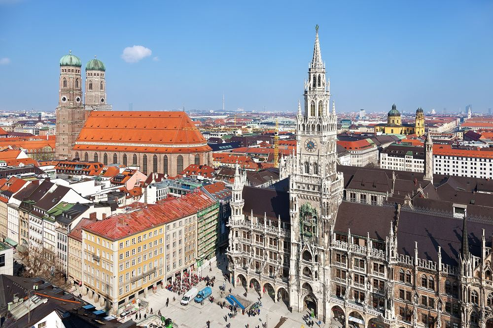
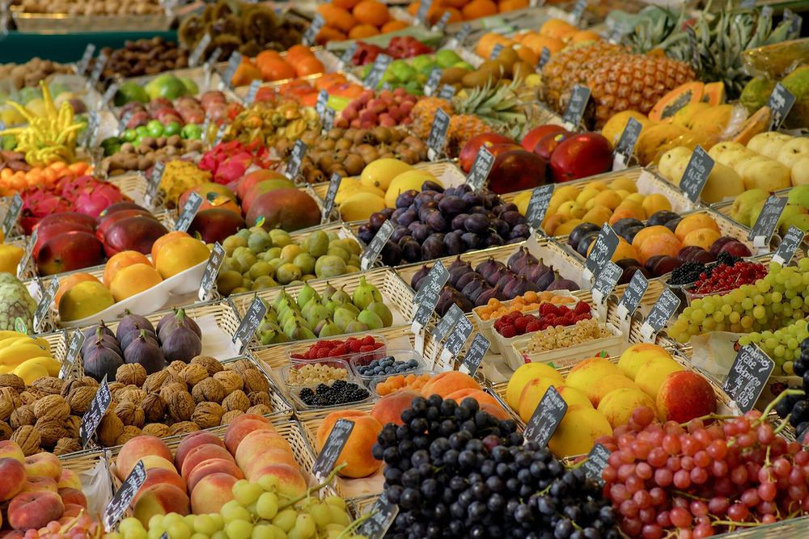
-
08:00
Última mañana en Escocia. Con el vuelo a las 10:30, salir a las 08:00 deja margen de sobra: el tranvía a la terminal sale de Princes Street, a 12 minutos del depto cuesta abajo.
Las llaves van a la caja de seguridad, no adentro del depto — las necesita el equipo de limpieza.
-
10:30Lufthansa LH2691 · EDI → MUC
Dos horas y cuarto de vuelo, directo. Una valija de 23 kg cada uno.
HorarioSale 10:30 · llega 13:45
-
13:45Llegada, y el S-Bahn al centro
El aeropuerto de Múnich está a 40 km de la ciudad, así que la llegada no termina al bajar del avión. El S-Bahn S8 sale de abajo de la terminal y tarda 45 minutos hasta la estación central.
DóndeTerminal 2 · el tren sale del subsuelo del aeropuerto
HorarioSale cada 20 minutos
Hay control de pasaportes: vienen del Reino Unido, que está fuera de Schengen. Y para el boleto conviene el de día aeropuerto-ciudad — el de grupo sale menos que dos sueltos.
-
15:05Del Hbf al hotel, y check-in
Son 900 metros desde la estación central, diez minutos a pie con las valijas.
No deshagan la valija. La tarde es corta y lo único que importa ahora es volver a salir.
-
15:45
El Dirndl y la Lederhose. No es un disfraz: durante la Wiesn se anda así por toda la ciudad, y ayuda de verdad — con los porteros de las carpas y para que les hagan lugar en una mesa.
DóndeAngermaier, en Rosental · pegado al Viktualienmarkt
HorarioLos jueves, hasta las 19:00
Es hoy o no la tienen para los tres días: mañana a las 10:00 ya están entrando a la Augustiner, y el sábado se levantan 06:15.
-
16:45
El mercado de Múnich: más de cien puestos de comida, flores y especialidades, con su propio Biergärten en el medio. Queda pegado a la tienda de Tracht, así que la compra los deja parados ahí.
HorarioDe 08:00 a 20:00, de lunes a sábado
DóndeLa hilera de carnicerías del mercado, la Metzgerzeile
Es el almuerzo del día, tarde y de parados: Leberkäse recién cortado adentro de un pancito, con mostaza dulce. Parecido a un pan de carne, y no aparece en ningún otro día del viaje. Una cada uno alcanza: a las 20:00 es el pato.
El Schmalznudel no hace falta buscarlo acá: en la Wiesn lo venden en las mesas, igual que los Brezn.
-
17:00
La plaza central, con el Ayuntamiento neogótico y la Frauenkirche — las dos cúpulas de cebolla — a tres minutos. A las 17:00 suena el Glockenspiel: cuarenta y tres campanas y treinta y dos figuras de tamaño natural que salen a girar, con un torneo de caballeros a caballo y un baile de toneleros.
Horario11:00, 12:00 y 17:00 · el de las 17:00 sólo va de marzo a octubre
DóndeCafé Glockenspiel · frente al Ayuntamiento
Dura 12 a 15 minutos y la plaza se llena: conviene estar unos minutos antes. Después, el Apfelstrudel del Café Glockenspiel, caliente y con salsa de vainilla.
-
18:00
300 escalones por una escalera angosta hasta los 91 metros. Desde arriba se ve Marienplatz a pico, la ciudad entera y, si el día está limpio, los Alpes al sur. Es la mejor vista de Múnich y la más barata.
HorarioDe 09:00 a 19:30 entre abril y octubre · última entrada 19:00
El sol se pone 18:53: subiendo a las 18:00 la agarran con la última luz. No hay ascensor.
-
19:00
Una iglesia barroca diminuta, encajada entre dos casas de la Sendlinger Straße y fácil de pasar de largo. La hicieron dos hermanos para ellos mismos, sin encargo de nadie, y por dentro no dejaron un centímetro sin dorar. Se ve en diez minutos y no se parece a nada.
DóndeSendlinger Str. 32 · sobre el camino de vuelta
En octubre cierra temprano — conviene mirar el horario ese mismo día. Si ya cerró, la fachada desde la vereda vale igual.
-
20:00
Lleno de muniqueses, es la casa de los Knödel: bolas de masa hervida de pan, papa, panceta, queso o espinaca. En la Wiesn son la guarnición del costado; acá son el plato, y dicen que hacen los más grandes de la ciudad. El dueño tiene hasta una academia donde enseña a hacerlos.
DóndeLilienstr. 51, en la Au, cruzando el Isar · 1,7 km desde la Asamkirche: 22 min a pie
HorarioDe 17:00 a 23:00 · la cocina corta a las 22:00
Mesa reservada a las 20:00. Pidan el pato: el mismo plato viene con Schweinsbraten, pero ese cerdo asado sí lo van a comer en la carpa.
Qué comer acá
Es la casa de los Knödel: bolas de masa hervida que en la Wiesn son la guarnición del costado y acá son el plato. El dueño tiene hasta una academia donde enseña a hacerlos.
Para arrancarObatzda: queso batido con manteca, cebolla y pimentón, que se unta en el Brezn. Es el picoteo de biergarten bávaro y en la carpa no lo van a pedir — allá se come pollo y cerdo.
El plato banderaHofente mit Rotkraut und Riesen-Knödel: pato asado con repollo colorado y un Knödel gigante. Es lo que hay que pedir — y el itinerario ya lo dice por una razón: el Schweinsbraten, el cerdo asado, lo van a comer igual en la carpa.
Los Knödel, que son el puntoHay de espinaca, de queso y de remolacha. El de remolacha va con manzana y apio, y el de espinaca con salsa de tomates cherry. Dicen que son los más grandes de Múnich.
Si quieren otra cosaKäsespätzle —los fideos cortos con queso, el plato de consuelo bávaro— y el schnitzel de la casa.
-
22:00
El barrio de bares de Múnich, al sur del casco viejo: cuadras de bares chicos y restaurantes alrededor del Gärtnerplatz, sobre Müllerstraße y Hans-Sachs-Straße. Se camina entero y a esta hora recién arranca.
DóndeA 14 min a pie del Wirtshaus, y queda de camino: del Gärtnerplatz al hotel son 24 min más, o 8 en taxi
Muchos bares chicos no toman tarjeta. Y a partir de las 23:30, cuando cierran las carpas, el centro se llena de gente que sale de la Wiesn — el Glockenbach queda al costado de esa ola.
Augustiner a la mañana, la Wiesn con los cuatro
Mañana
¡Oktoberfest! El día empieza a la bávara: Weisswurst (salchichas blancas que se pelan y se comen sólo antes del mediodía) con un Brezn (el pretzel gigante). A primera hora entran a la Augustiner, la carpa de los muniqueses y la única que sirve la cerveza de barriles de madera, y levantan la primera Maß (la jarra de un litro).
Tarde
Al mediodía, Hendl (medio pollo al asador), y después la Oide Wiesn, el rincón antiguo de la fiesta, con calesitas de antes de la guerra, bailarines que se palmean las piernas y trenzadores de látigo.
Noche
Tras una siesta se les suman dos personas más, y los cuatro se lanzan al predio: la vuelta al mundo, luces, bandas, y de cena Steckerlfisch (pescado entero asado en una vara, parado sobre las brasas).
El mejor momento de la semana para entrar sin reserva es un viernes de 10:00 a 15:00 — y esa mañana es además la parte tradicional del festival, porque la música fuerte recién empieza a las 18:00. A las 16:00 se suman dos más, y la tarde es el predio entre los cuatro.
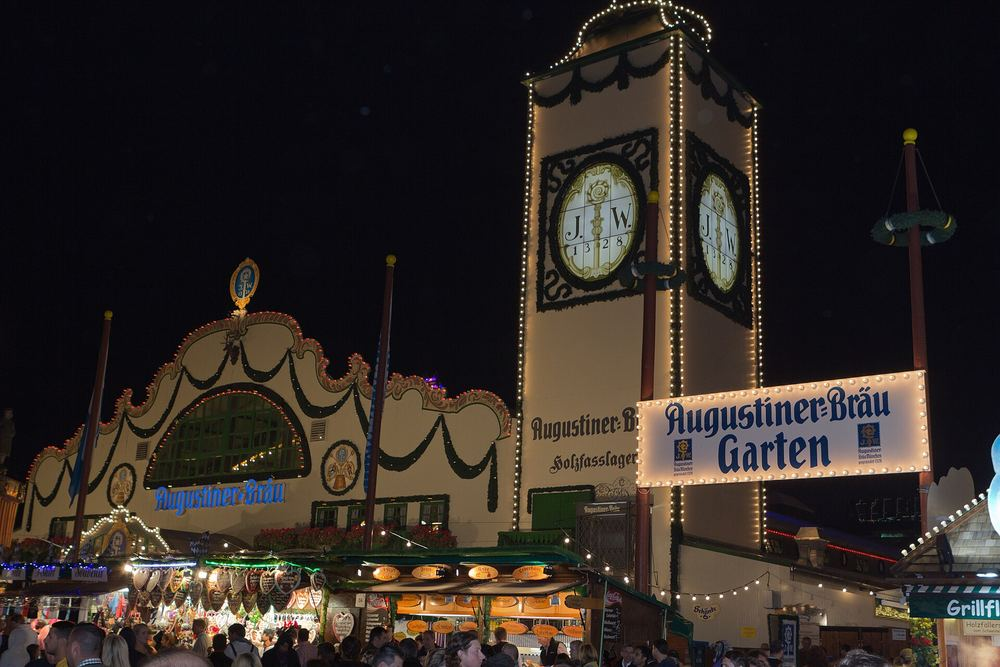
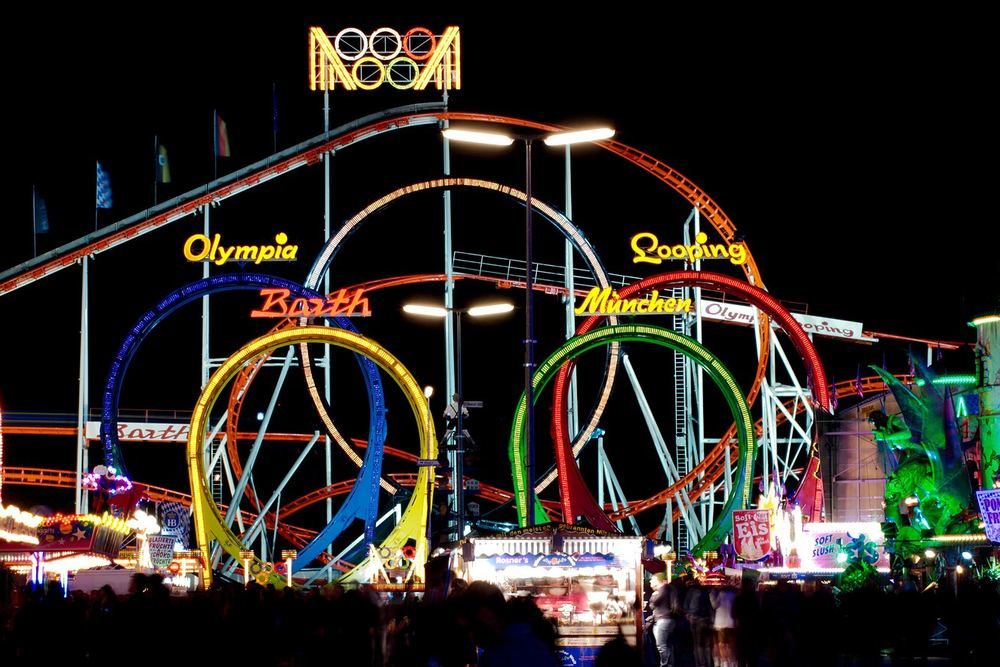
-
09:00Desayuno bávaro
Weisswurst con mostaza dulce y un Brezn. Son las salchichas blancas de Baviera: se les saca la piel y se comen sólo antes del mediodía — la regla vieja dice que no deben oír sonar las campanas del mediodía, de cuando no había heladera.
Hoy es el desayuno, no el almuerzo: a las 10:00 tienen que estar entrando a la carpa.
-
09:45
La carpa que eligen los muniqueses, en la Wiesn desde 1898. Es la única que sirve de barriles de madera desde 1987 — la cerveza sale con menos gas y más suave — y la que tiene el público más local, con Tracht de verdad.
DóndeSobre la Wirtsbudenstraße, la calle de las carpas
HorarioLos viernes abre 10:00
Un viernes de 10:00 a 15:00 es el mejor momento de walk-in de toda la semana. No hace falta cola: se entra caminando.
-
10:00Adentro, y la primera Maß
Los sienta la Bedienung — la moza — en diez minutos. Cada una manda en su sector de mesas: decide quién se sienta, lleva hasta diez jarras de un litro a la vez y cobra en la mano.
Redondear fuerte la propina en la primera jarra. Convertirla en aliada el primer minuto es lo que ordena el resto del día.
-
11:30La comida
Hendl, medio pollo al asador, o Schweinsbraten con Knödel. Hasta las 18:00 la ley obliga a todas las carpas a tocar sólo música de banda y a volumen bajo, así que se puede conversar.
Esta mañana es la parte tradicional del Oktoberfest. La joda arranca a las 18:00 por reglamento, y les toca el sábado.
-
13:00
El sector histórico, al sur del predio, con entrada aparte. Calesitas y juegos de antes de la guerra, bailes de Schuhplattler — el de las palmadas en el cuero —, agrupaciones de traje típico y trenzadores de látigo, dos veces por día. Es la parte más bávara de la Wiesn y casi ningún turista la hace.
Cuántoentrada barata · gratis después de las 21:00
DóndeAl sur del predio, con su propia entrada
-
14:15Hotel · siesta
Ocho minutos a pie. Vienen de cuatro horas de carpa y a la noche siguen con dos personas más: esta hora y media no es opcional.
-
16:00Encuentro en el hotel
Se suman dos, y de acá en adelante son cuatro.
-
17:00
El predio es gratis y abierto: no hace falta entrar a ninguna carpa. Los puestos de Lebkuchenherzen — los corazones de pan de especias con letras —, las almendras garrapiñadas, y dos clásicos que se miran gratis: el Toboggan, una cinta que sube gente y por la que nadie llega parado, y el Schichtl, un teatro de variedades de 1869 cuyo número es una decapitación en guillotina, en broma, con voluntarios del público.
Los cuatro no entran a una carpa grande un viernes a la noche sin reserva. Conviene avisárselo a los que llegan antes de que viajen, para que no aterricen esperando sentarse.
-
18:00
Cincuenta metros. Se ve la Theresienwiese entera, del monumento de la Bavaria a la iglesia de San Pablo, con el casco viejo detrás y — si el día está limpio — los Alpes al sur.
HorarioLos viernes anda hasta medianoche
Se pone el sol 18:51: la agarran con la última luz y después con el predio encendido.
-
20:00Cena
Una carpa chica — Zur Bratwurst, Heimer, Ammer — o los puestos del predio. Las chicas son restaurantes de verdad y mucho más fáciles que las grandes. Si pueden elegir, el Steckerlfisch: pescado entero ensartado en una vara y asado parado sobre las brasas. Es lo distinto del predio y no lo comen en ningún otro lado — el medio pollo ya lo comieron al mediodía y lo repiten mañana.
A las 20:00 las carpas chicas suelen estar llenas. Si no hay lugar, los Biergärten exteriores son 100% libres siempre —nadie los puede reservar— y los puestos del predio no cierran.
-
22:00
El día más difícil del festival
Mañana
El gran día. Es sábado y feriado nacional en Alemania, y se nota: al amanecer ya hay gente esperando en la puerta de las carpas. Ellos también. Un buen desayuno, cola desde temprano, y cuando se abren las puertas, adentro para quedarse, porque la regla del día es no salir.
Tarde
Bancos largos, Bedienungen (las mozas bávaras) cargando diez jarras a la vez, Hendl (medio pollo al asador) para aguantar y una banda que, cuando cae la tarde, deja las marchas tradicionales y arranca con los temas que suben a todo el mundo arriba de los bancos. Una Maß por hora, y así hasta la noche.
Sábado y Día de la Unidad Alemana: la peor combinación posible, sin ningún paquete oficial para esta fecha. Pero abren a las 09:00, y ahí está la jugada — no se hace cola todo el día: se hacen dos horas de cola y catorce adentro. Arriba, los momentos; abajo, las reglas.
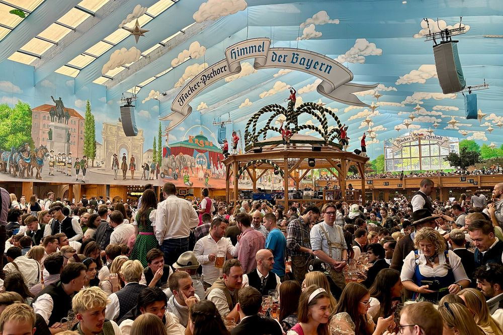
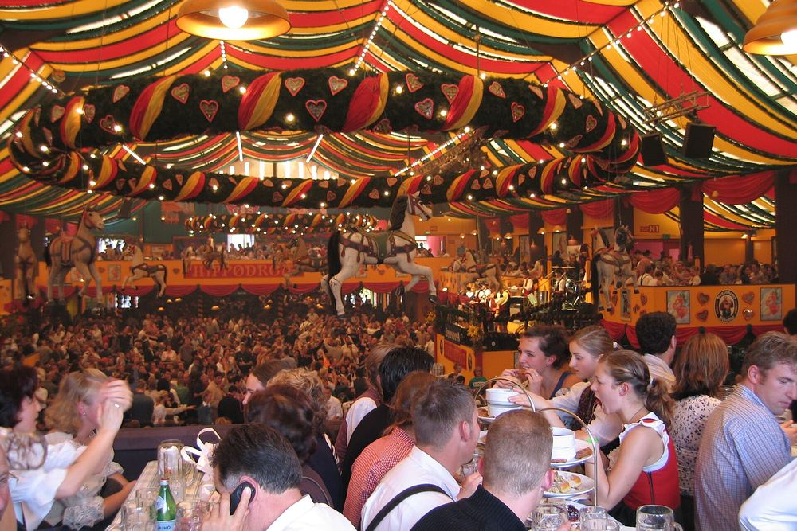
-
06:15Despertador, y algo sólido
Café y comida en una panadería antes de salir: adentro de la carpa no se desayuna, y una Maß de un litro en ayunas a las 09:30 es la trampa clásica del día.
-
07:00
Hoy es sábado y Día de la Unidad Alemana, así que las carpas abren 09:00 en vez de 10:00, y es el día más demandado del año. Son dos horas de pie en la calle, a unos 8 grados.
DóndeElegir la carpa la noche anterior y no cambiarla
CuálHofbräu es la más fácil: única con Stehkurve, el sector de pie donde está prohibido reservar
Siendo cuatro no es opcional: a las 09:00 las mesas están vacías y eligen ustedes; a las 11:00 hay que mendigar huecos sueltos y cuatro juntos ya no entran.
-
09:00Abren · adentro
Se terminó la cola. De acá en más el día se juega adentro.
-
09:15Elegir mesa — y esto es lo que decide el día
No agarren la primera mesa linda que vean. A esta hora todo parece libre, pero muchas de esas mesas ya están reservadas para la noche, y entre las 15:30 y las 17:00 aparece la Bedienung con el cartel de reserviert y los levanta.
Qué preguntar«Ist dieser Tisch heute Abend reserviert?» — ¿esta mesa está reservada para esta noche?
Dónde sentarseEn el sector de cuota libre. Peor ubicado, pero es suyo todo el día
Pregúntenlo ahora, no después: a las 09:15 la Bedienung tiene la carpa vacía y los reubica sin problema. A las 16:30 ya no hay adónde.
-
09:30La primera Maß
Un litro. Redondear fuerte la propina: la Bedienung es la que después les defiende el lugar.
Efectivo, y de sobra: adentro la tarjeta casi no corre.
-
10:00El medio pollo
Comer temprano no es un consejo: son catorce horas adentro y recién empieza.
-
12:00La carpa se llena · cierran puertas
De acá en adelante no entra nadie más hasta que salga gente. Ustedes ya están adentro; el que salió a dar una vuelta, no vuelve.
-
15:00Cae la cuota libre al 25%
Hasta las 15:00 la ley obliga a mantener libre entre el 40 y el 50% del aforo; después baja al 25%. Ya no les importa: están sentados desde las 09:15.
-
18:00Cambia la banda
Hasta ahora la ley sólo permitía música de banda a volumen bajo. A las 18:00 entran los éxitos, sube el volumen y la carpa se para arriba de los bancos.
A los bancos sí, a la mesa no: subirse a la mesa es lo único que la seguridad saca sin discutir.
-
22:30Última cerveza
La carpa cierra 23:30. Diez minutos a pie hasta el hotel — hoy no hace falta ni subte.
-
·La regla que cuesta el día: no salir
Salir de la carpa es volver a la cola, y después del mediodía la cola ya no entra. Los baños están adentro y son enormes. Y la mesa nunca vacía: uno se queda siempre.
-
·El ritmo
Una Maß por hora como techo, y agua en el medio. Son catorce horas y arrancan a las 09:30 — el que va a ritmo de tres cervezas la primera hora no llega a las 18:00, que es cuando empieza lo bueno.
-
·Zonas donde no los levanta nadie
El sector de cuota libre, los jardines exteriores de cualquier carpa — son 100% libres siempre — y la Stehkurve del Hofbräu, donde está prohibido reservar y por eso no existe el cambio de turno.
⚠ Eviten el Marstall: es la única carpa que evacúa la sala entera en el cambio de turno.
-
·Si algo sale mal
La Oide Wiesn: entrada barata, gratis después de las 21:00, y el Festzelt Tradition es la única carpa grande sin consumo mínimo. También las carpas chicas, y el Käfer y el Weinzelt, que abren hasta la 01:00 — cuando las grandes cierran a las 23:30, ahí hay rotación.
-
·Lo que no entra
Mochilas y bolsos de más de tres litros están prohibidos. Bolsito chico o nada.
A las 07:00 en octubre hay unos 8 grados y adentro es un horno: capas que se saquen fácil.
Mañana corta y tren al norte
Última mañana en Múnich. Los domingos la fiesta abre temprano, y aprovechan para una última Maß con el predio casi vacío: la única hora del viaje en que lo ven así, tranquilo, con las carpas recién despertando. Después, valijas y estación. Toman el tren de las 12:45 en la estación central de Múnich, rumbo al norte, con Bélgica en el horizonte.
El tren sale 12:45. Los domingos la Wiesn abre 09:00 y queda a ocho minutos del hotel, así que la mañana da justo para una última vuelta antes de agarrar las valijas.
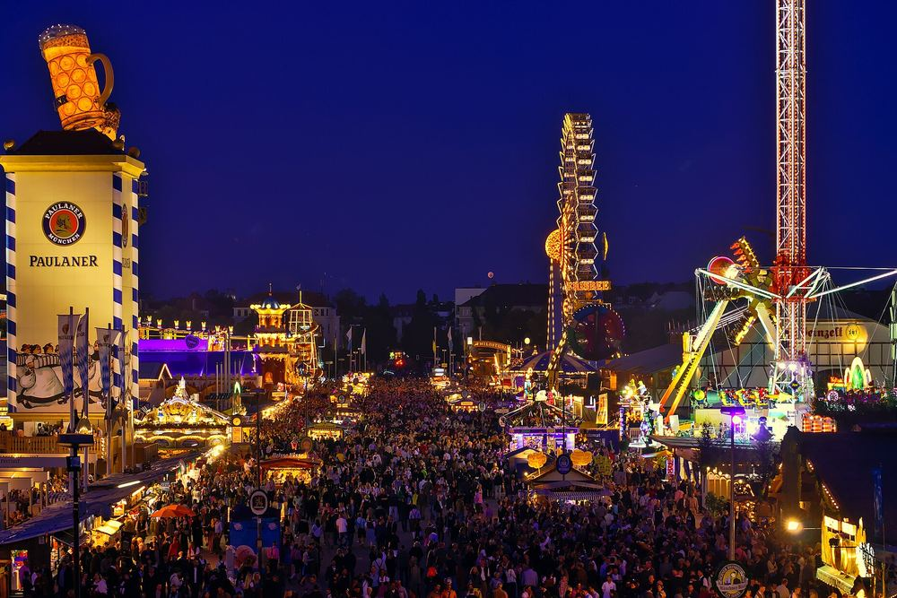
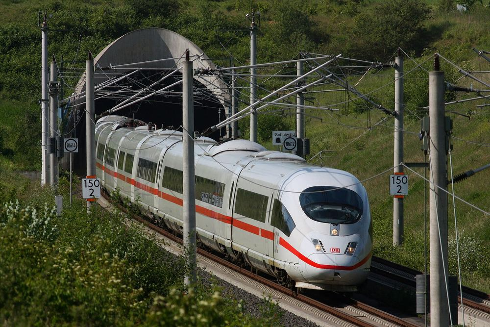
-
08:00Desayuno y valijas cerradas
Hoy se va cerrando todo: dejen las valijas listas antes de salir, que a la vuelta van a estar corriendo.
-
09:00
-
10:45Al hotel a buscar las valijas
Ocho minutos de vuelta, y de ahí a la estación.
-
11:45
-
12:45El tren al norte
Viajan en primera clase.
HorarioSale 12:45
-
·Lo que se pierden, y está bien
A las 12:00 hay salva de cañones en la escalinata de la Bavaria: es el cierre del Oktoberfest y lo hacen mujeres con trajes típicos, tirando con armas antiguas. Pasa a la misma hora en que ustedes están subiendo al tren. No hay forma de tener las dos cosas.
Bélgica
El cierre del viaje cervecero, y justo lo contrario de Múnich: en vez de mesas de diez personas y una sola clase de cerveza, acá hay bares chiquitos con cartas de trescientas cervezas distintas, y trapenses hechas por monjes. Todo se mueve en tren, con viajes de media hora.
Llegada a Gante
Tarde
Bélgica los recibe en Gante. El tren llega a Gent-Sint-Pieters a las 14:49, y la tarde se aprovecha a fondo. Entran al Gravensteen, un castillo medieval con foso y torres en pleno centro, con una audioguía que cuenta su historia con humor, y suben al Belfort, el campanario, para ver los techos de la ciudad.
Al atardecer llegan al Graslei, el muelle donde las casas de los antiguos gremios se reflejan en el río: para muchos, el rincón más lindo de Flandes.
Noche
Cenan gentse waterzooi (guiso cremoso de pollo con puerro, el plato de la ciudad), y la noche termina en el Dulle Griet, donde para que te sirvan la cerveza de la casa, en un vaso gigante, hay que dejar un zapato en garantía: lo suben al techo en una canastita.
La mañana cierra la escala y a media tarde arranca Flandes. Quedan poco más de dos horas de luz en Gante, y el atardecer en el Graslei es lo que hay que agarrar sí o sí.
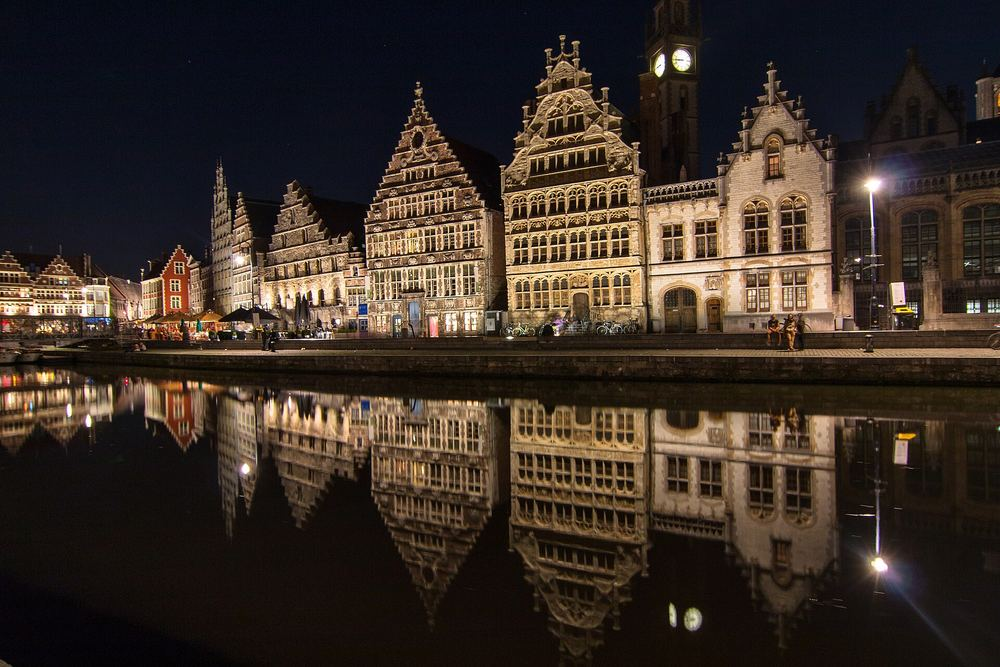
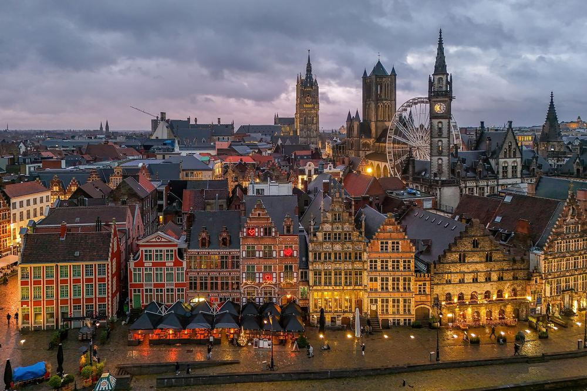
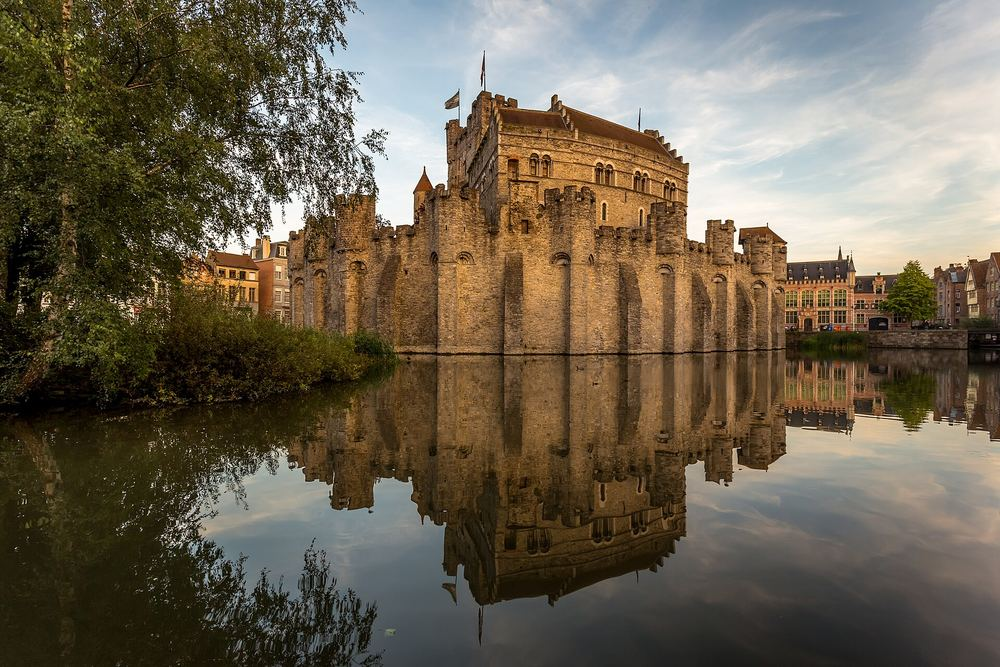
-
14:49Llegada a Gent-Sint-Pieters
La estación está a las afueras: al centro se va en tranvía, unos 20 minutos.
-
15:30Check-in
Y salen enseguida: quedan poco más de dos horas de luz.
-
16:00
-
17:15
-
18:30
Los dos muelles gremiales enfrentados sobre el río Lys, con las fachadas de los gremios medievales de un lado y del otro. Al caer la luz se encienden y se reflejan en el agua: es el mejor rincón de Flandes y les cae justo en horario.
Acá se sienta la gente en el borde del agua con algo para tomar. No hay que hacer nada más.
-
20:00
Una brasserie sobre la Vrijdagmarkt, la plaza grande de Gante, con cocina regional y de estación. Está en la lista de la oficina de turismo de la ciudad para comer waterzooi, y queda a dos minutos del Dulle Griet, que es donde sigue la noche.
DóndeVrijdagmarkt 17 · 7 min a pie desde el Graslei
HorarioLunes 10:00–23:00 · cierra los miércoles
Qué comer acá
Es la única noche del viaje en Gante, y el plato de Gante es uno solo.
El plato de GanteWaterzooi: pollo hervido con tiras finas de puerro, zanahoria y cebolla, todo en un caldo cremoso. Es el plato de esta ciudad —se llama gentse waterzooi por algo— y es la única noche del viaje en que lo pueden comer donde corresponde. La versión original era de pescado; la de pollo es la que se come hoy.
Lo que dicen las reseñasQue es cremoso y rico, y viene con pan casero. Alguna lo encontró aguado: es brasserie de barrio, no restaurante de mantel.
Ojo con repetirSi en la carta ven carne estofada en cerveza, déjenla: mañana a la noche es la del Cambrinus.
-
21:30
El Dulle Griet, con más de quinientas cervezas. La del ritual es la Max van 't Huis: la cerveza de la casa, 1,2 litros en un vaso enorme, y se sirve sólo acá. Para que se la traigan hay que dejar un zapato en garantía: lo meten en una canastita, lo suben al techo, y baja cuando devuelven el vaso. Y la cervecería Gruut, que hace la cerveza con hierbas en lugar de lúpulo, como se hacía antes del siglo XVI.
DóndeDulle Griet, en la Vrijdagmarkt
Gante → Brujas
Mañana
Veinticinco minutos de tren y aparece Brujas, una ciudad que parece detenida en la Edad Media.
Tarde
Después de una sopa casera a la sombra del Belfort, suben sus 366 escalones hasta las campanas. En bote recorren los canales, pasando bajo puentes de piedra y junto a patios que no se ven desde la calle, y después callejean sin plan. Al atardecer llegan al Rozenhoedkaai, el rincón de la postal, con el campanario reflejado en el agua.
Noche
Cenan carbonade flamande (carne estofada en cerveza oscura, con papas fritas), y la noche cierra en 't Brugs Beertje, una casa de 1632 con trescientas cervezas belgas y dueños que recomiendan como si fueran amigos.
Traslado corto: veinticinco minutos de tren y al mediodía ya están en Brujas, con la tarde entera. El paseo en bici quedó para mañana temprano, así que hoy es la ciudad — y les toca el atardecer, que es cuando Brujas está mejor.
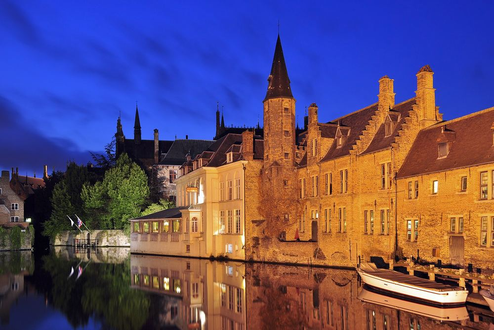
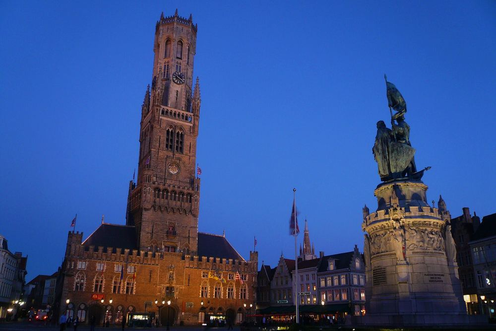
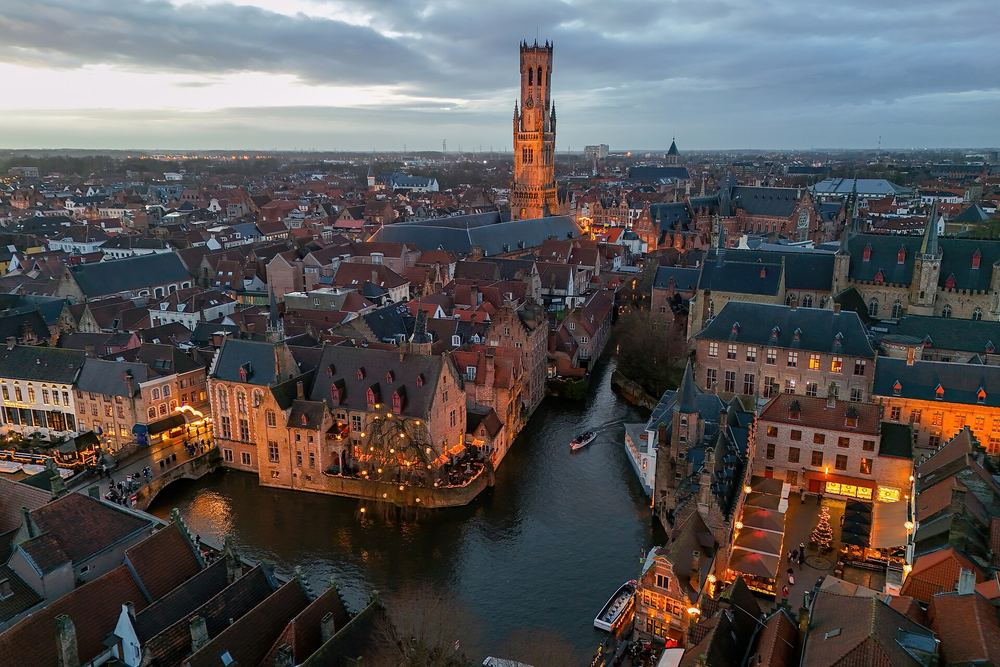
-
10:35
-
11:00Llegada, y las valijas al hotel
Brujas es chica: del hotel a cualquier lado se va caminando.
-
12:30
Un bar de sopas chiquito, pegado al Belfort. Se pide el combo: un tazón grande de sopa del día, medio panini, pan y manteca. Rápido y liviano.
DóndeHallestraat 4 · a 2 min del Belfort, que es lo que sigue
Horario11:30–15:30 · cierra los miércoles
Liviano a propósito: a la noche es la carne estofada del Cambrinus.
-
14:00
-
15:30Paseo en barco por los canales
Media hora. Brujas se construyó mirando al agua, así que desde abajo las casas se ven como fueron pensadas: los puentes bajos, las puertas de agua, los patios que no se ven desde la calle. Salen de varios embarcaderos del centro, sin reserva.
Cuánto lleva30 minutos
En octubre andan hasta media tarde. Si hay poca gente salen igual: no esperan a llenar.
-
16:15Callejear sin plan
Es lo que mejor funciona acá. Brujas entera se camina en una hora, y lo bueno aparece doblando en cualquier lado.
-
18:30
-
20:30
Una bierbrasserie a un paso del Markt: cuatrocientas cervezas en un libro con notas de cata, y una cocina que usa la cerveza como ingrediente y no como acompañamiento. Después, Brujas de noche: cuando se van los micros de un día la ciudad cambia por completo, los canales quedan quietos y las calles vacías. Les tocan dos noches seguidas, que es el verdadero lujo de dormir acá.
DóndePhilipstockstraat 19 · a un paso del Markt
HorarioAbre los siete días · los martes de 11:00 a 23:00 · se entra sin reserva
Pregunten por la Westvleteren 12, la trapense que muchos consideran la mejor cerveza del mundo. Los monjes casi no la venden a bares, pero se sabe que el Cambrinus la tuvo: no está garantizada.
Qué comer acá
Es la parada que faltaba: en un viaje armado alrededor de la cerveza, no había un solo plato cocinado con cerveza.
A esto vinieronLas carbonades flamencas hechas con Gulden Draak: carne estofada lento en cerveza oscura, servida con puré de manzana y papas fritas. Es el plato belga —lo llaman carbonade flamande en francés y stoverij en flamenco— y acá lo hacen con una cerveza que se puede pedir al lado para comparar.
Lo otro que hacen bienCroquetas de camarón, el otro clásico belga, éste de la costa. Y de postre, una crème brûlée perfumada con cerveza de abadía Ename.
Para tomarCuatrocientas cervezas en un libro con notas de cata. Si está la Westvleteren 12, ésa es la de esta noche.
-
22:00
Para cerrar la noche: trescientas cervezas belgas y cinco de barril, en una casa de 1632, con dueños que aconsejan de verdad. Es el lugar para pedir que les recomienden las trapenses que todavía no probaron.
DóndeKemelstraat 5 · 7 min a pie del Cambrinus, y 9 de ahí al hotel
HorarioMartes de 16:00 a 00:00 · cierra los miércoles, por eso va hoy
Acá no sirven Westvleteren, por respeto al pedido de los monjes. Para comer hay poco y a propósito: tabla de quesos, patés y salame, para acompañar.
El canal en bici, y el spa cervecero
Mañana
Hoy el día es en bicicleta. Salen de Brujas pasando junto a los molinos de las murallas y toman la orilla de la Damse Vaart, un canal que Napoleón mandó cavar y nunca terminó. Pasan por Damme y otros pueblitos de campo y, si la balsa Kobus está funcionando, cruzan el agua tirando ellos mismos de una manivela.
Tarde
A mitad de camino frenan a almorzar y emprenden la vuelta por la otra orilla. Treinta y un kilómetros después llega la recompensa: una tina de roble con agua caliente, lúpulo y cebada, y una cerveza en la mano.
Noche
A la noche, moules-frites (mejillones en olla con papas fritas, el plato nacional belga), y la última ronda en De Garre, un bar escondido en un pasaje tan angosto que se pasa de largo, con su Tripel (cerveza rubia y fuerte que sólo sirven ahí).
El único día del viaje que es una sola cosa de punta a punta: subirse a una bici a las 10:00 y bajarse a las 16:15, treinta y un kilómetros después, pedaleando junto a un canal que Napoleón dejó sin terminar. Y después meterse en una tina de lúpulo caliente.
-
10:00
Entregan bicis sólo de 10:00 a 12:00, y se devuelven hasta las 18:00: el día entra cómodo.
DóndeDe Ketting · Gentpoortstraat 23
Cierran con mal tiempo, y también los días de poco movimiento: lo avisa su propia web. Si ese día no están, Bruges Bike Rental (Niklaas Desparsstraat 17) y Ben's Bike ('t Zand 34) alquilan lo mismo.
-
10:15
Salen bordeando el anillo de las murallas hacia el noreste: la Kruispoort, una de las puertas medievales que quedan en pie, y después la hilera de molinos de viento parados sobre el terraplén, hasta la Dampoort.
Km2 de 31
Si quieren un café antes de pedalear, De Windmolen (Carmersstraat 135) es un bar de barrio pegado a los molinos, con vista a ellos. Muy buenas reseñas por la atención. Lleven efectivo: no toman tarjeta.
-
10:40
Acá arranca el canal. Lo mandó cavar Napoleón en 1810 para mover tropas hasta el mar, y nunca lo terminó: quedaron quince kilómetros rectos con álamos a los dos lados, algunos de más de cien años. El camino es de tierra compacta y absolutamente llano.
Es la ciclovía F310 y está señalizada. No hay forma de perderse: se va derecho, con el agua siempre a un costado.
-
11:15
Fue el puerto de Brujas hasta que el mar se llenó de arena y dejó a las dos tierra adentro. Quedó un pueblo del siglo XV con su ayuntamiento gótico intacto, el molino Schellemolen de 1867, y desde 1997 es el pueblo de los libros de Flandes: librerías de viejo a un paso una de otra.
Km7 de 31
Buen lugar para el primer café. De acá en adelante ya no hay casi nada hasta la mitad del recorrido.
-
12:15
-
12:40
Una balsa de autoservicio para cruzar el canal en Lapscheure. No hay balsero: uno mismo la cruza tirando de una manivela, con la bici arriba. La pusieron a principios de los noventa justo para esta ruta, y el nombre juega con el santo patrono de Hoeke.
Km12 de 31
⚠ Anda a diario, pero todo lo que se publica habla del verano y no pude confirmar que funcione en octubre. Si ese día no está, no cambia nada: se sigue por la misma orilla y el kilometraje es el mismo.
-
14:45La vuelta, por la otra orilla
El canal tiene camino de los dos lados, así que se vuelve sin repetir una sola vista. Son otros quince kilómetros, igual de llanos.
El viento del mar suele venir de frente a la vuelta. No es cuesta, pero se siente.
-
16:15
-
17:30
Una tina de roble llena de agua caliente a 39 grados con lúpulo, cebada y levadura, una cama de paja para después, y una cerveza en la mano mientras se bañan. Es privado — la sala es de ustedes dos — y el lúpulo, además de oler a cerveza, es antiinflamatorio: después de 31 km es exactamente lo que hace falta.
DóndeHoedenmakersstraat 2, Brujas · en un sótano medieval a un paso de la Markt
HorarioDe 17:30 a 19:00 · hay que estar 17:15: esos quince minutos son la introducción y la elección del lúpulo, y no salen de la hora y media
La sala Luxury suma sauna de lúpulo a 70°, una ducha de balde de roble con agua fría y la cama de paja para tirarse después. Si llegan tarde el final no se corre. Y después del baño recomiendan no ducharse por cuatro horas, para que el lúpulo siga trabajando.
-
20:00
Los mejillones con papas fritas —moules-frites—, el plato nacional belga, en una casa del siglo XVII dedicada a eso. Usan mejillones de Zeeland, los que se buscan acá, y octubre es plena temporada: los mejores son de octubre a diciembre.
DóndeSimon Stevinplein 9 · 13 min a pie del spa
HorarioTodos los días 12:00–16:00 y 17:30–21:00 · conviene reservar: es chico
Qué comer acá
La noche de los mejillones. Vienen de 31 km en bici y del spa: acá sí se come en serio.
Cómo se pidenLlegan en la olla tapada, con papas fritas al lado. Hay naturales, o con vino blanco, ajo o crema. La primera vez, naturales o al vino blanco: es donde más se siente el mejillón.
El trucoSe comen usando una cáscara vacía como pinza para sacar los demás.
De postreLa mousse de chocolate es la que nombran las reseñas.
-
21:30
Un bar de cerveza metido en un pasaje tan angosto que se pasa de largo, a la sombra del Belfort. Tiene unas 140 cervezas y una propia, la Tripel De Garre, que se sirve sólo ahí.
DóndeDe Garre 1 · 5 min de Poules Moules y 3 del hotel
HorarioMiércoles 12:00–23:00
't Brugs Beertje cierra los miércoles: por eso fue anoche, y hoy toca éste. Es la segunda de las dos noches en Brujas: cuando se van los micros de un día, los canales quedan quietos y las calles vacías.
Bruselas
Mañana
Brujas les regala una última mañana silenciosa en el Begijnhof, un patio de casitas blancas alrededor de un prado, junto al Minnewater, el lago de los cisnes. Una hora de tren y llegan a Bruselas.
Tarde
A la tarde viene uno de los momentos más esperados del viaje: Cantillon, una cervecería de 1900 que todavía hace lambic (cerveza ácida que fermenta con las levaduras que flotan en el aire de la ciudad), y lo prueban directo de la barrica. Volviendo al centro, las paredes se llenan de historietas: Tintín, los Pitufos, Lucky Luke.
Noche
Saludan al Manneken Pis y ven la Grand-Place encenderse de noche. Cenan stoemp (puré de papa con verduras y una salchicha gruesa arriba), y el brindis final es en Delirium, el bar con la carta de cervezas más larga del mundo.
El día que cierra el hilo cervecero. Salen de Brujas recién a las 11:30 — el tren no tiene hora obligatoria — así que ganan una mañana en la parte silenciosa de la ciudad. En Bruselas lo único con hora de corte es Cantillon; el resto es calle.
-
09:00
La mañana que ganan por salir más tarde. El Begijnhof es un patio cerrado de casas blancas alrededor de un prado, donde vivían las beguinas — mujeres que hacían vida religiosa sin ser monjas y sin encerrarse: podían irse cuando quisieran. Al lado, el Minnewater, el lago de los cisnes.
A las 09:00 no hay nadie. Es la parte silenciosa de Brujas y a media mañana deja de serlo.
-
11:30
-
12:30Llegada y check-in
Última parada de verdad del viaje.
-
13:15
El primer Pain Quotidien del mundo: lo abrió un cocinero belga en esta misma calle en 1990, y de acá salieron los cientos de locales que hay hoy. Pan de masa madre, tartines —tostadas abiertas con algo arriba— y ensaladas.
DóndeRue Antoine Dansaert 16 · a 2 min del hotel
HorarioTodos los días, de la mañana hasta las 19:00
Liviano a propósito: a las 15:00 es Cantillon, con degustación, y la cena es en Nüetnigenough.
-
14:30A Cantillon
Veinte minutos hasta Anderlecht. Vale salir con tiempo: es lo único del día con hora de corte.
-
15:00
La última cervecería de lambic que queda dentro de Bruselas, funcionando desde 1900 y todavía a la manera vieja: no eligen la levadura — abren las ventanas del altillo y dejan que las que andan en el aire de la ciudad hagan el trabajo. Después esperan tres años en barrica. La visita es autoguiada, entre las barricas, y la degustación va incluida: una del lambic joven sacado directo de la barrica y otra a elección. Prueben antes de comprar — la gueuze es un gusto adquirido, y si no les va, la kriek de cereza y la Rosé de Gambrinus de frambuesa entran mucho más fácil.
Horario10:00 a 16:00 · la tienda hasta las 17:00
CerradoMiércoles, domingos y feriados — el jueves está bien
La tiendaAcá se compran las botellas, y es el mejor souvenir del viaje: gueuze (mezcla de lambics de distintas edades, con gas — el champagne de las cervezas), kriek con cerezas y Rosé de Gambrinus con frambuesas. Buena parte de la producción se vende sólo acá
OjoSon ácidas y secas, no dulces: el que espera una cerveza normal se lleva un susto. Van en la valija despachada, envueltas en ropa
⚠ Última entrada 16:00. Es el punto más alto del viaje cervecero: no lo dejen para último momento.
-
16:45
Bruselas tiene más de cincuenta paredes enteras pintadas con personajes de historieta — Tintín bajando una escalera de incendios, los Pitufos, Lucky Luke. Hay un recorrido señalizado y se hace caminando de vuelta.
El más fotografiadoEl de Tintín, en la Rue de l'Étuve
-
17:45
La plaza, con las casas gremiales doradas: cada fachada era la sede de un gremio — panaderos, cerveceros, sastres — y competían a ver cuál era más ostentosa. El Manneken Pis está a tres cuadras: es chiquito y decepciona a todo el mundo, pero tiene un guardarropa de más de mil trajes y lo cambian según el día.
-
19:15La Grand-Place de noche
La Grand-Place iluminada es cuando está mejor: el oro de las fachadas prende de verdad. Y la ven dos veces el mismo día, con luz y sin.
-
20:00
Una brasserie belga de las de antes —fachada art déco, piso de madera, chimenea— a una cuadra de la Grand-Place. El nombre es una palabra de Bruselas para el glotón, y se presenta como un lugar para glotones y amantes de la buena cerveza: cocina belga tradicional y una de las mejores cartas de cerveza de la ciudad.
DóndeRue du Lombard 25, esquina Rue du Midi · a una cuadra de la Grand-Place
HorarioDe lunes a viernes desde las 17:00 · la cocina toma pedidos hasta las 22:30 · no toma reservas
No toma reservas: la mesa es del que llega primero, y a las 20:00 puede haber que esperar un rato.
Qué comer acá
La última cena en Bélgica, y la de cerveza.
Para tomarCantillon de barril —el mismo lambic de la tarde, ahora con la comida— y cerveceras chicas belgas como De la Senne. La carta de botellas es larga: si les falta alguna trapense, pidan que se la recomienden. Lo de barril cambia: pregunten qué hay esa noche.
Qué pedirEl stoemp con salchicha, el plato de Bruselas: puré de papa pisado con verduras y una salchicha gruesa arriba. De entrada, para compartir, el tuétano asado o las croquetas de parmesano.
Ojo con repetirHay guiso de carne con salsa de cerveza, pero es el mismo plato del martes en el Cambrinus.
Un avisoLa carta cambia: esto es lo que nombran las reseñas, no la lista exacta de esa noche.
-
21:30
La vuelta
Bruselas → Barcelona
Mañana
Última mañana europea, sin relojes. La pasan en el mercado de pulgas del Jeu de Balle, entre más de trescientos puestos de antigüedades, muebles viejos y cosas sin nombre, y suben al Sablon, la plaza de las chocolaterías de verdad, a llenar la valija de chocolate belga.
El último almuerzo es en Mer du Nord: ostras del Mar del Norte y sopa de pescado, de parados en la vereda con una copa de vino blanco, como hacen los de Bruselas.
Tarde
Después, valijas y aeropuerto. Vuelan con Iberia de Bruselas a Barcelona: salen a las 18:05 y llegan a las 20:15.
Noche
La última cena del viaje es en el aeropuerto, esperando el vuelo que los lleva a casa.
La última mañana europea, y no hay nada con horario hasta el vuelo de las 18:05. Se va entera en el mercado de pulgas y el Sablon, que están uno al lado del otro, y baja al centro para el último almuerzo del viaje: ostras de parados, a cuatro minutos del hotel.
-
08:30Desayuno y valijas
Dejan las valijas en el hotel: la mañana se hace caminando y liviano.
Confirmar en el check-in que las guardan hasta la tarde. Casi todos lo hacen, pero es el último día y no conviene descubrirlo esa mañana.
-
09:00
En el barrio de las Marolles: más de 300 puestos de antigüedades, muebles, ropa vieja y cosas sin nombre, desparramados sobre la plaza. Es el único mercado de pulgas del mundo que abre los 365 días del año, y funciona desde 1873.
Horario06:00 a 14:00 entre semana
DóndePlace du Jeu de Balle · Vossenplein
Los mejores días son jueves y viernes — y hoy es viernes. Se regatea, y los precios de la primera hora no son los de la última.
-
11:00
Subiendo desde las Marolles: la plaza de los anticuarios y de las chocolaterías en serio — las casas que hacen el chocolate, no las que lo revenden en la calle turística. Es el mejor lugar del viaje para comprar lo que se llevan, y están todas en una cuadra: Pierre Marcolini es el único de Bruselas que viaja a elegir los granos de cacao y los tuesta él mismo — fue mejor pastelero del mundo en 2020, y es el de probar; Leonidas es el popular, más de cien variedades, el que come el belga todos los días, y es el de llevar cantidad; Wittamer es la casa histórica del Sablon, con proveeduría real. Y Neuhaus, que inventó el praliné — el bombón relleno — en 1912, tiene su local original en las Galeries Royales, por donde pasaron ayer.
Cómo se subeHay un ascensor público gratis que conecta las Marolles con la explanada de arriba, y de paso tiene vista
CuántoPoco más de una hora · las cuatro casas están en la misma cuadra
Es lo último que compran del viaje: el chocolate viaja bien, pero no lo dejen al sol ni arriba del radiador del avión.
-
12:15Bajada al centro, a pie
Del Sablon al barrio de Sainte-Catherine son unos veinte minutos, todo cuesta abajo y pasando por la Grand-Place — o sea que la última caminata del viaje es también la última vez que la ven.
Cuánto lleva20 minutos · 1,5 km cuesta abajo
-
12:40
Una pescadería con barra, y una institución de Bruselas. No es un restaurante: se pide en el mostrador de acero, te llaman por el nombre y comés parado en la vereda con una copa de blanco. Hay ostras del Mar del Norte, sopa de pescado caliente, vieiras, navajas y pescado a la plancha. Se piden varios platitos, uno atrás del otro.
DóndeRue Sainte-Catherine 45 · a 4 minutos a pie del hotel
HorarioLa barra, de martes a domingo de 11:00 a 18:30
Con una docena de ostras, una sopa y un plato más, es un almuerzo completo — no una entrada. Y cierra el viaje con la misma idea con la que empezó en la Boquería: mostrador, producto y nada más.
-
13:45Al hotel por las valijas
Cuatro minutos desde la barra. Esa cercanía es a propósito: es el día de la conexión delicada y no conviene andar cruzando la ciudad con la hora encima.
-
15:30
-
18:05Iberia · BRU → BCN
Dos horas y diez de vuelo, directo.
HorarioSale 18:05 · llega 20:15
-
20:15Llegada a Barcelona
Y ahí empieza la última noche del viaje.
-
21:30
No hay tiempo para ir a la ciudad: la última cena del viaje es en la T1, la terminal de donde sale el Level. Se elige ahí mismo, sin reserva.
Primero el trámite, después la comida. Son dos reservas separadas: retiran las valijas, hacen el check-in de Level, pasan seguridad, y recién ahí se sientan a cenar, cerca de la puerta.
-
·El punto delicado del viaje
Son 3 h 50 de conexión con el Level de las 00:05, pero son dos reservas separadas: si el vuelo de Bruselas se atrasa, el de vuelta no los espera ni los reubica.
Eviten despachar valija hasta Barcelona si se puede. Es el único punto del viaje donde un retraso cuesta caro.
Barcelona → Santiago → Punta Arenas
El regreso. Pasada la medianoche, Europa queda atrás. Vuelo Level de Barcelona a Santiago: sale a las 00:05 y llega a las 9:35. Unas horas en Santiago y el último tramo: vuelo Latam de Santiago a Punta Arenas, sale a las 12:07 y llega a las 16:35. Veinticuatro días y cinco países después, con la valija llena de historias, están de vuelta en casa.